<meta charset="utf-8">
<script src="./script/latex-theme-v2.js"></script>
<script src="https://morgan3d.github.io/markdeep/2/latest/markdeep2.min.js" markdeep="2"></script>
<!-- Addition style for author list -->
<style>
	#AuthorList {
		text-align: center;
		margin: 0 auto;
		min-width: min(50%, 400px);
	}
	.affiliation {
		font-style: italic;
	}

	article-abstract {
		display: block;
		margin-block: 1em;
	}
	article-abstract::before {
		content: "Abstract:";
		font-weight: bold;
		margin-inline-end: .4em;
	}
</style>
<plaintext>


# Role of boundary slip in silo discharge: Insights from lattice Boltzmann modeling of dense granular flows


<div id="AuthorList">
    Yunjin Huang (黄云进),<sup>1</sup> Gengchao Yang (杨耿超)),<sup>1,[*](#authorMail)</sup> Lu Jing (景路),<sup>2</sup> and Qinghe Yao (姚清河)<sup>1</sup>
    <br>
	<ol class="affiliation">
		<li>School of Aeronautics and Astronautics, Sun Yat-sen University, Guangzhou 510275, China</li>
		<li>Institute for Ocean Engineering, Shenzhen International Graduate School, Tsinghua University, Shenzhen, China</li>
	</ol>
</div>

<article-abstract>
Slip on the boundaries are ubiquitous in granular flows, yet their influence on silo discharge dynamics requires quantitative investigation.
We develop a lattice Boltzmann framework for dense granular flows that incorporate Navier slip boundary condition, in which the Navier slip length $l_s$ controls a weight coefficient interpolating between the no-slip and free-slip limits.
In the lattice Boltzmann method (LBM) simulation of the narrow granular silo with lateral orifice, the $\mu(I)$ rheological parameters and lateral Navier slip length $l_s$ are directly extracted from the corresponding data from discrete element method (DEM), and reproducing both the macroscopic discharge and the internal flow structures over a range of orifice heights $D$.
Increasing either $l_s$ or $D$ independently will reduce lateral wall resistance and accelerates the flow at the wall and around the orifice, yet the slip-induced enhancement on discharge rate is effective only when $l_s$ smaller than the particle diameter.
This saturation phenomenon stems from the geometric confinement of the narrow silo, in which the lateral boundary layer occupies a constant fraction of the cross-section, confining the slip effect to the region near the wall, and making the shear band thickness to be independent of both $D$ and $l_s$.
Based on the LBM simulation results, we propose a scaling law of steady state discharge rate, in which the no-slip discharge rate follows the classical Hagen-Beverloo correlation, and the slip-induced enhancement is captured by a nonlinear, rapidly saturating amplification factor that depends on $l_s$.
These findings provide fundamental physical insights into the Navier slip effect in granular silo flows, and offer a robust lattice Boltzmann framework of granular continuum simulations.
</article-abstract>

<p>
<b>Journal:</b> Physical Review E <br>
<b>Volume (Issue):</b> To be determined |
<b>Page:</b> To be determined |
<b>DOI:</b> To be determined <br>
<b>Received:</b> 12 Aug, 2026 |
<b>Accetped:</b> 17 Nov, 2026 <br>
</p>

<p id="authorMail"> * yanggch8@mail.sysu.edu.cn</p>


## Introduction

Dense granular flows are ubiquitous in industrial processes and geophysical hazards, ranging from pharmaceutical powders to landslides and debris flows.
The intricate many-body interactions at the particle scale give rise to complex macroscopic rheological behaviors that have motivated decades of experimental, numerical, and theoretical investigation.
Among the canonical configurations, gravity-driven granular silo discharge stands out for its geometric simplicity and broad practical relevance, making it a prototypical system for studying dense granular flow dynamics [1].


The physics of granular silo flows has been extensively investigated from both macroscopic and mechanical perspectives. 
At the macroscopic level, the Hagen-Beverloo correlation provides a well-established relationship between the steady discharge rate and orifice size, with numerous extensions developed for diverse scenarios [2-6]. 
Mechanically, wall friction plays a significant role in velocity pattern and force chain structure during silo discharge.
The steady-state velocity profiles in slender silos exhibit self-similar channel-flow patterns [7-10].
The flow regime transitions are accompanied by distinct evolutions of the force chain structure [10-13].
Despite these advances, however, the quantitative effect of slip velocity at the walls on the discharge dynamics of granular silo flows warrants further investigation.


Continuum modeling offers a computationally efficient approach to probing such questions.
The $\mu(I)$ rheology [14] has emerged as a robust constitutive model for dense granular flows, relating the friction coefficient $\mu$ to the dimensionless inertial number $I$.
The friction coefficient increases from a minimum value $\mu_s$ (the internal Coulomb friction of the material) with $I$, a dependence that has been described in both local and nonlocal formulations [15].
The $\mu(I)$ rheology has been successfully applied to silo flows.
Staron et al. [16] and Tian et al. [17] systematically compared continuum predictions with the simulation results obtained from discrete element method (DEM).
Lin and Yang [18] showed that nonlocal effects become important when the orifice is narrow.
Dunatunga
and Kamrin [19] and Zhou et al. [6] used continuum models to study the mass discharge rate and silo clogging, respectively.
In these studies, however, wall boundaries were generally prescribed as no-slip [6, 16, 17], free-slip [19], or Coulomb frictional [18] boundary conditions, underscoring the need for a physically grounded boundary model for granular continuum.


The slip of granular flows at the wall originates from the microscopic interaction between particles and the boundary, and exerts an intricate enhanced effect on the bulk flow [9, 13, 20].
A physically motivated description of this effect is provided by the Navier slip boundary condition, which relates the slip velocity $u_{\text{slip}}$ at the wall to the wall shear rate $\dot{\gamma}_{\text{slip}}$ through the slip length $l_s$, i.e., $u_{\text{slip}} = l_s \, \dot{\gamma}_{\text{slip}}$.
Theoretical analyses within kinetic theory of granular flows have revealed the dependence of $u_{\text{slip}}$ on local shear rate [21,22].
However, these predictions are restricted to dilute granular gases, and their extension to various dense flows remains unclear.
Empirical relations for $l_s$ have instead been extracted from DEM simulations of steady chute flows over flat [23,24] and bumpy [25] boundaries, and the Navier condition has recently been implemented in a finite-volume framework, proving relevant in transient column collapse [26].
These developments raise two questions for granular silo flows.
Does Navier slip behavior also occur on the lateral walls?
And if so, can it be captured within a continuum modeling framework?


To address these questions efficiently, we employ the lattice Boltzmann method (LBM) as our numerical solver.
LBM offers two key advantages for the present problem: its algorithmic simplicity facilitates straightforward implementation, and its mesoscopic nature allows boundary conditions, including Navier slip, to be incorporated in a physically natural way [27, 28].
While LBM has been widely used as a fluid solver in coupled LBM-DEM schemes [29, 30], its recent application as a standalone granular continuum solver has also shown promise.
Yang et al. [31, 32] integrated the $\mu(I)$ rheology with LBM and successfully reproduced granular column collapse.
Shen et al. [33] extended the approach to cohesive granular flows using a viscous $\mu(I)$ rheology [34].
These developments establish LBM as an effective platform for granular continuum simulations.


In this work, we combine the $\mu(I)$ rheology, the Navier slip boundary condition, and the lattice Boltzmann method into a unified continuum framework for dense granular flows.
We validate the model against DEM simulations of rectangular silo discharge with a lateral orifice, then systematically investigate how the Navier slip length on the lateral walls affects the steady discharge rate.
The paper is organized as follows.
[Section 2](#model_formulation) describes the numerical model, including the LBM formulation for granular continuum and the implementation of the Navier slip boundary condition.
[Section 3](#discharge_of_granular_silo_with_lateral_orifice) presents the silo discharge simulation of the LBM continuum model against the DEM simulations in terms of the macroscopic discharge rate and the internal flow structures.
[Section 4](#effect_of_boundary_slippage_on_silo_flow) reports the slip-affected granular flow dynamics and the modified scaling law for silo discharge.
Conclusions are drawn in [Sec. 5](#conclusions).

## Model formulation

### Lattice Boltzmann method for free-surface flows

The lattice Boltzmann method (LBM) is based on the mesoscopic gas kinetic theory, rather than Navier-Stokes equation for continuum fluid. LBM solves the kinetic evolutions of finite discretized distribution functions, and reconstructs the macroscopic flow field by the arithmetic calculations of simplified numerical integration in phase space [27].
For the density distribution function $f_i (\boldsymbol{x}, t)$ located at $\boldsymbol{x}$ and moving with the discrete velocity $\boldsymbol{c}_i$, its governing equation at time $t$ is written as [35]
\begin{equation}
    f_i (\boldsymbol{x} + \boldsymbol{c}_i \delta_t, t+\delta_t) - f_i (\boldsymbol{x}, t) = -\frac{1}{\tau} \left[ f_i (\boldsymbol{x}, t) - f_i^{eq} (\boldsymbol{x}, t) \right] + F_i \delta_t,
\label{eqn:LBGK}
\end{equation} 
where $\delta_t$ denotes the time step, $\tau$ is the dimensionless relaxation time in LBM. The symbol $f_i^{eq}$ denotes the second-order truncated Maxwell equilibrium state reconstructed from the local fluid density $\rho$ and  fluid velocity $\boldsymbol{u}$,
\begin{equation}
    f_i^{eq} = w_i \rho \left[
        1 + \frac{\boldsymbol{c}_i \cdot \boldsymbol{u}}{c_s^2}
        + \frac{(\boldsymbol{c}_i \cdot \boldsymbol{u})^2}{2 c_s^4}
        - \frac{\boldsymbol{u} \cdot \boldsymbol{u}}{2 c_s^2}
    \right],
\end{equation}
where $w_i$ is the weight factor in the direction of $\boldsymbol{c}_i$, and $c_s$ is the lattice speed of sound. The source term proposed by Guo et al. [35] is 
\begin{equation}
    F_i = w_i \left( 1 - \frac{1}{2 \tau} \right) \left[
        \frac{\boldsymbol{F} \cdot \boldsymbol{c}_i}{c_s^2} + 
        \frac{(\boldsymbol{u}\boldsymbol{F} + \boldsymbol{F}\boldsymbol{u}):(\boldsymbol{c}_i \boldsymbol{c}_i - c_s^2 \boldsymbol{I})}{2 c_s^4}
    \right],
\end{equation}
where $\boldsymbol{F}$ denotes the body force. The velocity moments of $f_i$ connect the mesoscopic quantities and the macroscopic fluid properties [35], i.e.,
\begin{equation}
    \rho = \sum_{i} f_i,
    \quad
    \rho \boldsymbol{u} = \sum_{i} \boldsymbol{c}_i f_i + \frac{\delta_t}{2} \boldsymbol{F},
    \quad
    p = c_s^2 \rho,
\end{equation}
where $p$ denotes the fluid pressure.
The Chapman-Enskog expansion recovers Eq.\eqref{eqn:LBGK} to the Navier-Stokes equation \[36\] , with the relationship of
\begin{equation}
    \eta = \rho c_s^2 \, (\tau - 0.5) \delta_t,
    \label{eqn:LBM_tau}
\end{equation}
where $\eta$ denotes the apparent dynamic viscosity of fluids.

<figure>
    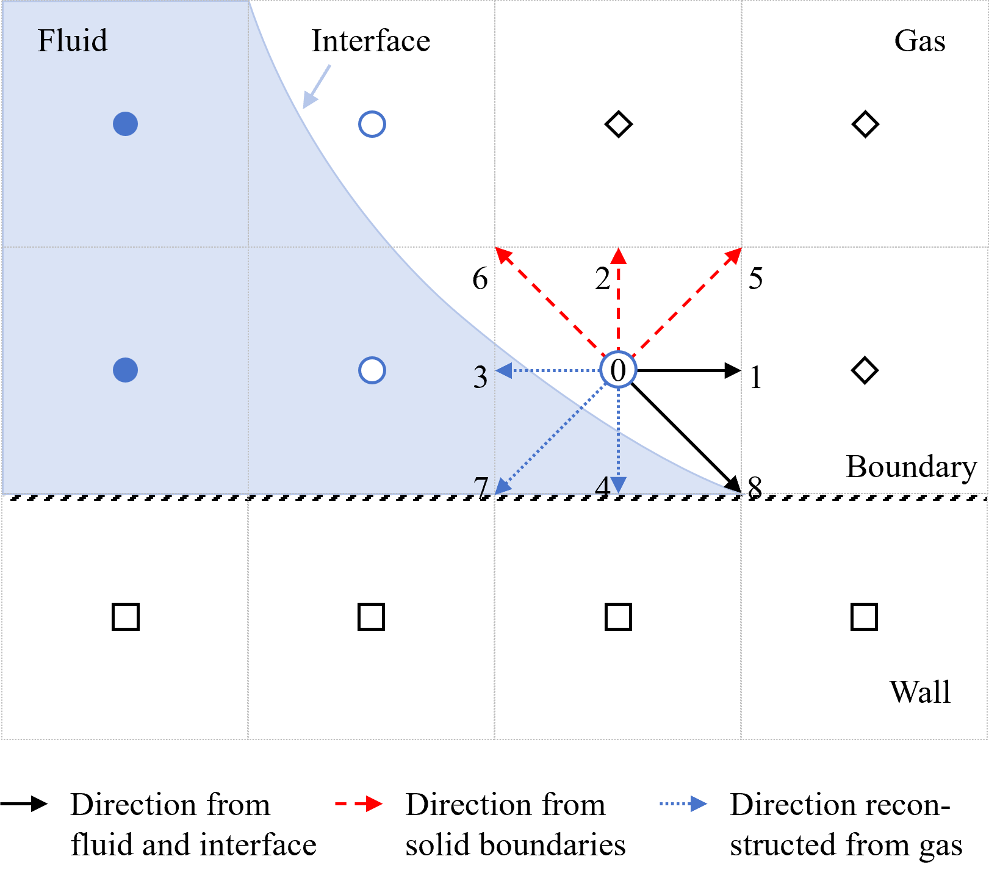
    <figcaption>
        Figure 1: Sketch of the cell types in the lattice Boltzmann simulations. The filled circles, hollow circles, diamonds and square represent fluid, interface, gas and solid lattice cells, respectively. The shaded area represents the actual region occupied by fluid.
    </figcaption>
</figure>

The D2Q9 discrete velocity model shown in [Fig. 1](#Fig01) is employed for two-dimensional simulations [37]. The lattice speed of sound in the D2Q9 model is $c_s = 1 / \sqrt{3}$. The weight coefficients are $w_0 = 4/9$, $w_{1-4} = 1/9$ and $w_{5-8} = 1/36$. The discrete velocity set is
\begin{equation}
    \boldsymbol{c}_{i} = \begin{cases}
        (0,0) & i=0 \\
        (\pm 1, 0), (0, \pm 1) c & i=1-4 \\
        (\pm 1, \pm 1) c & i=5-8 \\
    \end{cases},
\end{equation}
where $c = \delta_x / \delta_t$ is the lattice speed, and $\delta_x$ denotes the lattice spacing. In dimensionless LBM simulations, $\delta_x$ and $\delta_t$ are generally set as the length and time scales, i.e., $\delta_x = \delta_t =1$.

A single-phase free-surface scheme is incorporated into LBM to track the evolution of the fluid-gas interface [38,39], as shown in [Fig. 1](#Fig01).
On this basis, the gas-phase drag on the liquid phase is neglected in the single-phase free-surface model adopted in this study.
The details of the free surface model are introduced in [Appendix A](#AppendixA).

### Lattice Boltzmann modeling of dense granular flows

The constitutive behavior of dense granular flows is commonly described through the $\mu(I)$ rheology [14], which relates the macroscopic friction coefficient $\mu = \sigma/p$ (where $\sigma$ is the shear stress and $p$ is the pressure) to the inertial number $I$.
This approach has been successfully employed in continuum simulations of granular flows in our previous works [31,32]. Assuming an incompressible viscoplastic description, the $\mu(I)$ rheology takes the form
\begin{equation}
    \mu(I) = \mu_s + \frac{\mu_d - \mu_s}{I_0 + I} I,
    \quad\text{with }
    I = \frac{\dot{\gamma} d_p}{\sqrt{p / \rho_p}},
    \label{eqn:muI_rheology}
\end{equation}
where $\mu_s$, $\mu_d$, and $I_0$ are rheological parameters, $\rho_p$ is the particle density, $d_p$ is the particle diameter.
The shear rate $\dot{\gamma}$ is defined as $\dot{\gamma} = \sqrt{2 \dot{\gamma}_{\alpha\beta} \dot{\gamma}_{\alpha\beta}}$, where $\dot{\gamma}_{\alpha\beta} = \frac{1}{2} \left( \partial u_{\alpha} / \partial x_{\beta} + \partial u_{\beta} / \partial x_{\alpha} \right)$ is the strain rate tensor, with $\alpha, \beta$ denoting spatial coordinate indices.


The apparent dynamic viscosity of the granular continuum is obtained from the $\mu(I)$ model as $\eta_{app} = \mu(I) p/ \dot{\gamma}$. To regularize the numerical singularity of $\eta_{app}$ when $\dot{\gamma}$ approaches zero, we adopt the Papanastasiou regularization [32, 40], which yields
\begin{equation}
    \eta_{app} = 
    \frac{p \mu_s}{\dot{\gamma}} \left[ 1 - \exp\left(-\frac{\dot{\gamma}}{\lambda}\right) \right] + 
    \frac{(\mu_d - \mu_s) p}{I_0 \sqrt{p / \rho_p} + d_p \dot{\gamma}} d_p,
    \label{eqn:LBM_muI_viscosity}
\end{equation}
where $\lambda$ is set to be a small number ($0.1\,\text{s}^{-1}$ in this study) as the regularization parameter.
A minimum pressure threshold $p_{\min} = \rho_p g d_p$ is additionally imposed to maintain numerical stability when both $p$ and $\dot{\gamma}$ approach zero.


Within the LBM framework, the strain rate tensor $\dot{\gamma}_{\alpha\beta}$ is computed locally from the second order moment of the non-equilibrium distribution functions [41],
\begin{equation}
    \sum_{i=0}^{8} c_{i\alpha} c_{i\beta} f_{i}^{neq} = -2 c_s^2 \rho \tau_{eff} \dot{\gamma}_{\alpha\beta},
    \label{eqn:LBGK_gamma}
\end{equation}
where $f_{i}^{neq} = f_i - f_{i}^{eq}$ is the non-equilibrium distribution function, and $\tau_{eff} = \eta_{app} / (\rho c_s^2) + 1/2$ is the effective LBM relaxation time.
Following Conrad et al. [42], the explicit update procedure of $\tau_{eff}$ at time step $t+\delta_t$ proceeds as follows.
First, $\tau_{eff}(\boldsymbol{x}, t)$ is used in Eq. \eqref{eqn:LBGK_gamma} to compute $\dot{\gamma}_{\alpha\beta}(\boldsymbol{x}, t)$.
The shear rate $\dot{\gamma} = \sqrt{2 \dot{\gamma}_{\alpha\beta}(\boldsymbol{x},t) \dot{\gamma}_{\alpha\beta}(\boldsymbol{x},t)}$ is then substituted into Eq. \eqref{eqn:LBM_muI_viscosity} to obtain $\eta_{app}(\boldsymbol{x}, t+\delta_t)$. 
Finally, $\eta_{app}(\boldsymbol{x}, t+\delta_t)$ is substituted into Eq. \eqref{eqn:LBM_tau} to update $\tau_{eff}(\boldsymbol{x}, t+\delta_t)$, completing the relaxation time required in Eq. \eqref{eqn:LBGK}.


### Mesoscopic implementation of Navier slip boundary condition

The Navier slip boundary condition is employed to capture the slip behavior of granular continua on solid walls, which has been validated in previous studies on granular flows [23-26].
As illustrated in [Fig. 2(a)](#Fig02), the fluid slip velocity at the wall $u_{\text{slip}}$ is expressed as $u_{\text{slip}} = l_s \, \dot{\gamma}_w$, where $\dot{\gamma}_w$ is the shear rate at the wall ($y=0$ in [Fig. 2](#Fig02)), and $l_s$ is the Navier slip length.

<figure>
    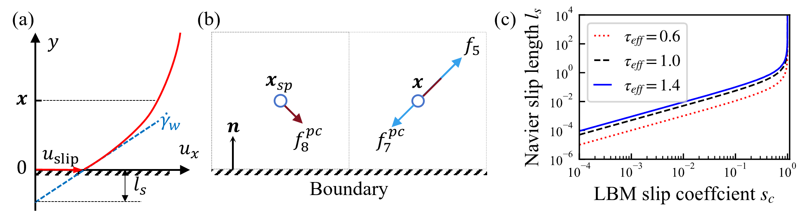
    <figcaption>
        Figure 2: The relationship between the slip coefficient $s_c$ in LBM  and the Navier slip length $l_s$ of the boundary (in lattice unit). Figure (a) represents the sketch of velocity profile near the boundary, figure (b) is the corresponding LBM representation, and figure (c) plots $l_s$ against $s_c$ for different effective LBM relaxation times $\tau_{eff} = [0.6, 1.0, 1.4]$.
    </figcaption>
</figure>

Succi [43] demonstrated that the slip state at a boundary can be represented as a weighted average of the no-slip and free-slip states within the LBM framework.
[Figure 2(b)](#Fig02) presents the corresponding LBM representation of [Fig. 2(a)](#Fig02), using the D2Q9 model shown in [Fig. 1](#Fig01).
The unknown distribution function at node $\boldsymbol{x}$ along direction $\boldsymbol{c}_5$ is reconstructed as
\begin{equation}
    f_{5}(\boldsymbol{x}, t + \delta_t) = 
    (1 - s_c) \, \underbrace{f_{7}^{pc} (\boldsymbol{x}, t)}_{\text{no-slip}} + 
    s_c \, \underbrace{f_{8}^{pc} (\boldsymbol{x}_{sp}, t)}_{\text{free-slip}},
    \label{eqn:LBM_succi_slip}
\end{equation}
where $s_c \in [0, 1]$ is the slip coefficient in LBM, and $\boldsymbol{x}_{sp} = \boldsymbol{x} - \boldsymbol{c}_{sp} \delta_t$ is the adjacent fluid node streaming to $\boldsymbol{x}$ via specular reflection.
The vector $\boldsymbol{c}_{sp} = \boldsymbol{c}_5 - (\boldsymbol{c}_5 \cdot \boldsymbol{n})\boldsymbol{n}$ is the projection of $\boldsymbol{c}_5$ onto the wall, with $\boldsymbol{n}$ denoting the unit normal vector of the wall.
Specifically, in [Fig. 2(b)](#Fig02), we have $\boldsymbol{c}_{sp}=\boldsymbol{c}_{1}$.


Based on Eq. \eqref{eqn:LBM_succi_slip},  Švec and Skoček [44]  have proposed the relationship between the macroscopic slip length $l_s$ and the mesoscopic slip coefficient $s_c$ ,
\begin{equation}
    s_c = \frac{l_s}{l_s + \tau_{eff} - \frac{1}{2}},
    \label{eqn:slipCoef_vs_slipLen}
\end{equation}
where $\tau_{eff}$ denotes the effective LBM relaxation time in Eq. \eqref{eqn:LBGK} for non-Newtonian fluids. This relation is then examined in [Fig. 2(c)](#Fig02).
For $s_c \to 0$, the slip length $l_s$ increases slowly and linearly, approximating a no-slip boundary. As $s_c$ increases further, the curve bends upward and $l_s$ diverges as $s_c \to 1$, recovering the free-slip limit through an infinite Navier slip length.
A larger $\tau_{eff}$ shifts the entire curve upward.


For granular flow simulations, the effective LBM relaxation time $\tau_{eff}$ varies spatially according to Eq. \eqref{eqn:LBGK_gamma}, necessitating a mass-conserving definition of $\tau_{eff}$ in Eq. \eqref{eqn:slipCoef_vs_slipLen}.
Consider the neighboring nodes $\boldsymbol{x}$ and $\boldsymbol{x}_{sp}$ in [Fig. 2(b)](#Fig02), according to the discrete velocity directions of D2Q9 model shown in [Fig. 1](#Fig01), the corresponding boundary schemes are
\begin{equation}
    f_{5}(\boldsymbol{x}, t+\delta_t) = (1 - s_c(\boldsymbol{x})) f_{7}^{pc} (\boldsymbol{x},t) + s_c(\boldsymbol{x}) f_{8}^{pc} (\boldsymbol{x}_{sp},t)
\end{equation}
and
\begin{equation}
    f_{6}(\boldsymbol{x}_{sp}, t+\delta_t) = (1 - s_c(\boldsymbol{x}_{sp})) f_{8}^{pc} (\boldsymbol{x}_{sp},t) + s_c(\boldsymbol{x}_{sp}) f_{7}^{pc} (\boldsymbol{x},t).
\end{equation}
To ensure mass conservation across both distribution functions, $s_c(\boldsymbol{x})$ must equal $s_c(\boldsymbol{x}_{sp})$. In this study, the effective LBM relaxation time in Eq. \eqref{eqn:slipCoef_vs_slipLen} is therefore evaluated as the average of the local effective relaxation times of the neighboring lattice nodes  $\bar{\tau}_{eff} = [\tau_{eff}(\boldsymbol{x}) + \tau_{eff}(\boldsymbol{x}_{sp})]/2$.


The proposed continuum framework for dense granular flows has been validated in our previous work [45].
Building upon this foundation, the following sections investigate the discharge of granular silos with an lateral orifice.
This simple geometry introduces complex transient dynamics and intricate boundary behaviors, providing a rich physical scenario to explore the interaction between wall boundary, gravity, and macroscopic flow patterns.


## Discharge of granular silo with lateral orifice

[Section 2](#modelformulation) establishes a continuum framework that couples the $\mu(I)$ rheology and the Navier slip boundary condition within the lattice Boltzmann method.
This section integrates the discrete element method (DEM) and our LBM framework to study the discharge of a granular silo with a lateral orifice.
Specifically, we investigate how prolonged particle-wall contact and asymmetric orifice govern the flow regime transition and modify the macroscopic discharge characteristics.

### Numerical setup

We consider a granular silo with a lateral orifice as the representative physical system, whose initial geometric setup in DEM simulations is shown in [Fig. 3(a)](#Fig03).
The lateral and basal walls consist of fixed particles arranged in a single-layer simple cubic packing, as illustrated in [Fig. 3(b)](#Fig03).
The particles that make up the wall have a diameter of $d_w$ and share the same properties as the moving particles. Particle properties are summarized in [Table 1](#Table1).

<figure>
    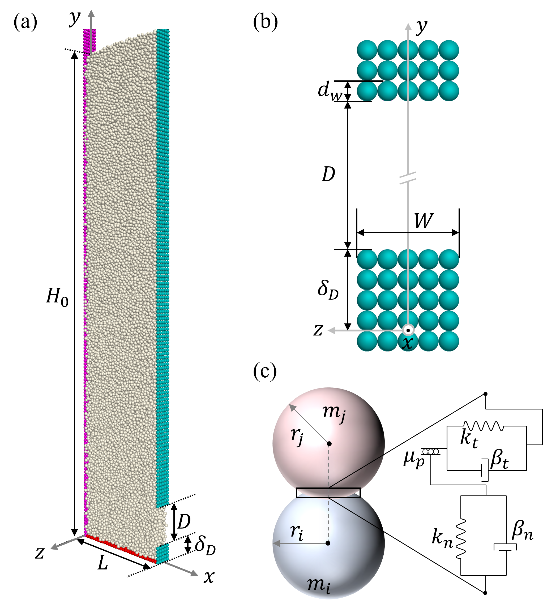
    <figcaption>
        Figure 3: Sketch of the granular silo flow with lateral orifice. (a) DEM simulation setup at $t=0$. The light grey particles are moving particles, particles in red are basal wall particles. (b) Arrangement of the right lateral wall and the orifice. (c) Hertz-Mindlin contact model of particles.
    </figcaption>
</figure>


The Hertz-Mindlin contact model is selected for DEM simulations [46].
Assume particle $a$ and $b$ come into contact, as shown in [Fig. 3(c)](#Fig03), their radii are $r_a$ and $r_b$, and their masses are $m_a$ and $m_b$, respectively.
Their normal overlap is denoted as $\Delta_n$, and the accumulated relative tangential displacement at the point of contact is denoted as $\Delta_t$.
The tangent shear stiffness $k_t$ and normal shear stiffness $k_n$ are 
\begin{equation}
    k_n = \frac{E}{1-\nu^2} \sqrt{\frac{r_{ab} \Delta_n}{2}}, \quad
    k_t = \frac{2 E}{(2-\nu)(1+\nu)} \sqrt{\frac{r_{ab} \Delta_n}{2}},
\end{equation}
where $r_{ab} = 2 r_a r_b/(r_a + r_b)$. The normal contact force $\mathrm{F}_n$ and the tangential contact force $\mathrm{F}_t$ are
\begin{equation}
\begin{aligned}
    \mathrm{F}_n &= \frac{2 E}{3 (1-\nu^2)} \sqrt{\frac{ r_{ab} }{2}} |\Delta_n|^{3/2} + 2 \beta_n \sqrt{m_c k_n} \tilde{u}_{n},\\
    \mathrm{F}_t &= \begin{cases}
        k_t {\Delta_t} + 2 \beta_t \sqrt{m_c k_n} \tilde{u}_{t}, &  |\mathrm{F}_t| \leq \mu_p |\mathrm{F}_n| \\
        \mu_p \mathrm{F}_n \cdot \text{sign}(\Delta_t), & |\mathrm{F}_t| > \mu_p |\mathrm{F}_n|
    \end{cases},
\end{aligned}
\end{equation}
where $m_c = m_a m_b/(m_a + m_b)$, and $\tilde{u}_{n}, \tilde{u}_{t}$ are normal and tangential components of the relative velocity $\tilde{\boldsymbol{u}}$ between particle $a$ and $b$, respectively. 

<figure>
<figcaption id="Table1" style="text-align: center;">Table 1: Particle properties in DEM simulations</figcaption>

| Physical variable             | Value                          |
|-------------------------------|--------------------------------|
| Particle density              | $\rho_p=2650\,\mathrm{kg/m^3}$ |
| Mean particle diameter        | $d_p = 1 \,\mathrm{mm}$        |
| Flowing particle diameter     | $d \in [0.9 d_p, 1.1 d_p]$     |
| Wall particle diameter        | $d_w = 1 \,\mathrm{mm}$        |
| Young's modulus               | $E=10^9 \,\mathrm{Pa}$         |
| Poisson's ratio               | $\nu=0.4$                      |
| Friction coefficient          | $\mu_p=0.5$                    |
| Normal critical damping ratio | $\beta_n= 0.2$                 |
| Shear critical damping ratio  | $\beta_t= 0.2$                 |

</figure>

The rectangular silo is initially filled with particles whose mean diameter is $d_p = 1 \,\mathrm{mm}$ with a $10\%$ variation around the mean to avoid crystallization.
The width, depth and height of silo are $L=30 d_p$, $W=5d_p$ and $300 d_p$, respectively.
The initial height of granular column is $H_0 = 150 d_p$.
The orifice is situated on the right lateral wall with height $D$, whereas the distance from its lower edge to the silo bottom is $\delta_D = 4 d_p$, see [Fig. 3(b)](#Fig03).
In DEM simulation, the $z$ direction is periodic to eliminate the effect of walls along this direction.
Particles flowing outside the silo are deleted from the DEM simulation if their distance to the right lateral wall exceeds $0.15 L$ or they fall below the silo bottom, as they no longer influence the bulk flow.
This DEM simulation setup represents an idealization of an infinitely thick silo in which the front and back wall friction is not the dominant mechanism, so that confinement in the $z$-direction can be neglected at leading order.

The two-dimensional computational domain of LBM continuum simulations is constructed based on the $xOy$ plane perspective shown in [Fig. 3(a)](#Fig03), reserving ample space outside the silo to avoid explicit modeling of the outlet boundary for the lateral orifice.
Assume that the solid volume fraction of granular flows $\Phi$ takes the typical value of dense packing granular media $\Phi = 0.6$, then the density of continuum is $\rho_f = \rho_p \Phi=1590\,\mathrm{kg/m^3}$.
The apparent viscosity of the granular continuum is computed by Eq. \eqref{eqn:LBM_muI_viscosity}. The lateral walls of the silo are modeled as slip boundaries with Navier slip length $l_s$, with its implementation in [Sec. 2.3](#modelformulation/mesoscopicimplementationofnavierslipboundarycondition).
The bottom wall of the silo and other walls outside the silo in the computational domain are no-slip boundaries. 


### DEM simulation and parameter identification

DEM simulations of granular discharge from a silo with a lateral orifice were performed for orifice heights $D=[10d_p,11d_p,12d_p,13d_p,14d_p]$. 
Each DEM simulation is performed once, and the randomness of DEM has negligible effect on the overall granular flow dynamics in this study. A brief discussion on repeated DEM simulations can be found in [Appendix B](#AppendixB).


[Figure 4(a)](#Fig04) shows the temporal evolution of the residual mass $M(t)$ of particles in the silo, normalized by the initial total mass $M_0=M(t=0)$.
Larger $D$ leads to higher mass discharge rate, whereas the final residual mass is independent of $D$. [Figure 4(b)](#Fig04) presents the final deposits at $t=4\,\mathrm{s}$ for varying $D$, with the blue lines indicating linear interpolations of the free surfaces. The inclination angle $\theta$ of the final deposit fluctuates around their mean value $\bar{\theta}=24.2^{\circ}$.
All simulations exhibit the consistent final deposit morphology, attributed to the uniform particle properties.

<figure>
    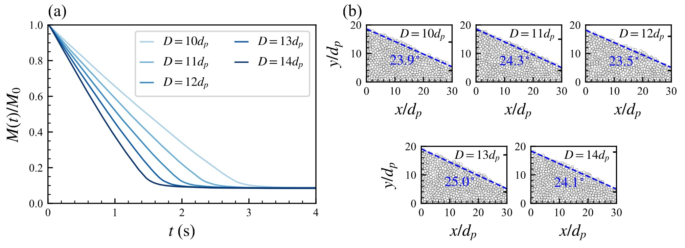
    <figcaption>
        Figure 4: DEM simulation results. (a) The temporal evolution of the residual mass of particles in the silo. The residual mass $M(t)$ is normalized by the initial total mass $M_0$. (b) The final deposits of DEM simulations with different orifice height $D$. In each figure, the blue line represents the linear interpolation of the free surface, with the corresponding value beneath showing the fitted inclination angle $\theta$.
    </figcaption>
</figure>

The coarse-graining procedure is applied to the DEM data at selected time instants $t=[0.5\,\mathrm{s},1.0\,\mathrm{s},1.5\,\mathrm{s},2.0\,\mathrm{s},2.5\,\mathrm{s},3.0\,\mathrm{s}]$, details are provided in [Appendix C](#AppendixC).
These time instants cover the entire flow process, enabling analysis of the internal flow structure from the coarse-grained fields, based on which the $\mu(I)$ rheological parameters of the bulk flow and the Navier slip length at the lateral walls are extracted.
For quasi-two-dimensional flows, all coarse-grained DEM data are then averaged in the $z$ direction.

<figure>
    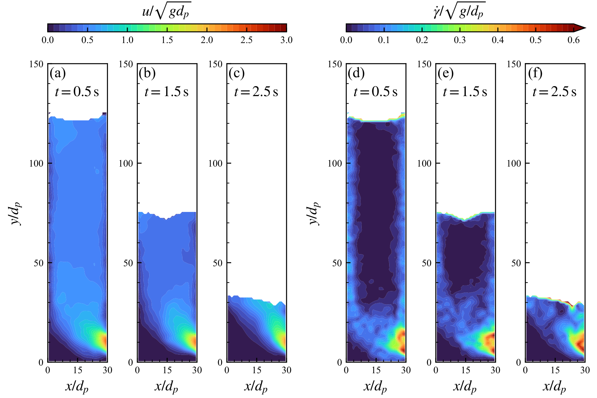
    <figcaption>
        Figure 5: Temporal evolution of (a-c) the velocity magnitude $u$ and (d-f) the shear rate $\dot{\gamma}$ of the coarse-grained DEM data, with orifice height $D=10d_p$.
    </figcaption>
</figure>

Taking $D=10d_p$ as an illustrative case, [Figure 5](#Fig05) shows the typical distributions of velocity magnitude $u$ and shear rate $\dot{\gamma}$ from the coarse-grained DEM data.
During discharge, the maximum velocity is observed at the right orifice, while the upper bulk rapidly reaches a steady state.
A stagnant zone forms at the bottom left corner of the silo, producing the final deposit shown in [Fig. 4(b)](#Fig04).
High-shear regions appear near the orifice (up to approximately $y=30d_p$) and along the entire lateral walls.
The bulk flow in the central region descends uniformly with near-zero shear rate.
This region gradually shrinks and eventually vanishes as particles continue to discharge.

<figure>
    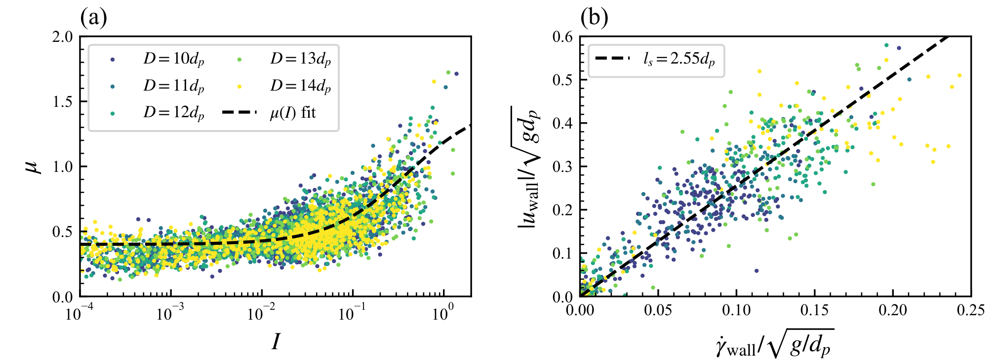
    <figcaption>
        Figure 6: Parameter identification from coarse-grained DEM data. (a) The $\mu(I)$ rheology scatters, where the black dashed line is Eq. \eqref{eqn:muI_rheology} with $\mu_s=0.4$, $\mu_d=1.5$ and $I_0=0.4$. (b) Relationship between shear rate on the lateral wall $\dot{\gamma}_{\text{wall}}$ and the velocity on the lateral wall $u_{\text{wall}}$, where the dashed line is the fit line with a Navier slip length $l_s=2.55 d_p$.
    </figcaption>
</figure>

[Figure 6(a)](#Fig06) plots the friction coefficient $\mu$ against the inertial number $I$ for all coarse-grained DEM data.
Data points corresponding to the median velocity with near-zero shear rate are excluded from the parameter identification, as they do not contribute to the rheological characterization.
Data with solid volume fraction $\Phi<0.5$, indicating proximity to the free surface, are also omitted from the fitting procedure.
As a result, the values $\mu_s=0.4$, $\mu_d=1.5$, and $I_0=0.4$ are selected to capture the overall trend of the $\mu(I)$ rheology in granular silo flows.
A sensitivity analysis of these rheological parameters is presented in [Appendix D](#AppendixD).
It is worth noting that these relatively larger $\mu_d$ and $I_0$ are consistent with the findings of Fullard et al. [47], who used MRI velocimetry to quantify granular silo flow and found the $\mu(I)$ parameters of $\mu_s=0.6$, $\mu_d=1.7$ and $I_0=0.5$ that match their experiment data for different silos.
The fitted value of $\mu_s=0.4$ in [Fig. 6(a)](#Fig06) is also close to the typical value employed by [14] ($\mu_s=0.38$).

[Figure 6(b)](#Fig06) shows the absolute value of wall velocity $|u_{\text{wall}}|$ versus the wall shear rate $\dot{\gamma}_{\text{wall}}$ at times $t=[0.5\,\mathrm{s},1.0\,\mathrm{s},1.5\,\mathrm{s}]$, which represent the typical flow states in the coarse-grained DEM data.
The $u_{\text{wall}}$ and ${\dot\gamma}_{\text{wall}}$ of both side walls are calculated using second-order extrapolation of the three nearest coarse-grained points along the inner normal direction.
The majority of data points follow a linear distribution, a result of the consistent particle properties and packing configuration across all simulations.
The resulting Navier slip length for both lateral walls is $l_s \approx 2.55 d_p$. 


### LBM continuum simulation

The LBM simulations were performed for orifice heights $D=[10 d_p,11 d_p,12 d_p,13 d_p,14 d_p]$, for which the rheological parameters and Navier slip length are obtained from [Fig. 6](#Fig06), i.e. $\mu_s=0.4$, $\mu_d=1.5$, $I_0=0.4$ and the Navier slip length $l_s=2.55 d_p$.
Since our previous works [31,32,45] have verified the mesh independence of the granular continuum dynamics, all LBM simulations in this paper use a typical lattice spacing of $\delta_x=d_p$.
The time step is selected as $\delta_t = 3.125 \times 10^{-5} \,\mathrm{s}$ to keep a small lattice Mach number.


#### Macroscopic behaviors

[Figure 7](#Fig07) compares the LBM results with the reference DEM data in terms of the residual mass in the silo $M(t)$ and the mass discharge rate through the orifice $Q(t)=-\mathrm{d} M / \mathrm{d} t$.
In [Fig. 7(a)](#Fig07), the mass evolution from LBM simulations follows the overall trend of the corresponding DEM results.
In [Fig. 7(b)](#Fig07), increasing $D$ produces a higher steady-state discharge rate and an earlier transition from steady state to deceleration.
The LBM results reproduce the same qualitative trends in $Q$ as the DEM results.
For $D=[11d_p,12d_p,13d_p]$, the LBM results enter the deceleration stage slightly earlier than the DEM results.
However, this modest discrepancy has only a minor effect on the residual mass $M(t)$.
Overall, the DEM and LBM results are in good agreement for both $M(t)$ and $Q(t)$.


<figure>
    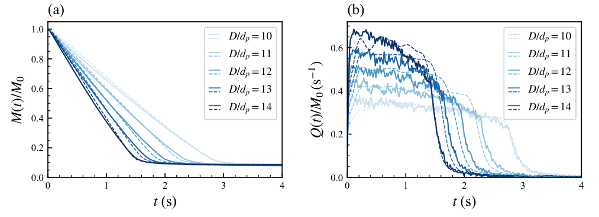
    <figcaption>
        Figure 7: Comparison of DEM (solid lines) and LBM (dashed lines) in granular silo flow simulations. The figure (a) and (b) present temporal evolution of the mass of residual particles in the silo $M(t)$ and the mass discharge rate of the silo $Q(t)$, respectively. Both the $M$ and $Q$ are scaled by initial silo mass $M_0$.
    </figcaption>
</figure>


[Figure 8](#Fig08) compares the free-surface profiles from the DEM and LBM simulations at intervals of $0.5 \,\mathrm{s}$.
The free-surface shape obtained from the LBM is consistent with the DEM results for all $D$ and time instants considered, although a slight offset in surface position reflects the modest discharge-rate differences seen in [Fig. 7(b)](#Fig07).
As discharge proceeds, the cumulative difference in discharged mass leads to the offset between the free surfaces predicted by the two methods.
By $t=3.5\,\mathrm{s}$, the granular flows in both the DEM and LBM simulations have essentially ceased for all $D$, and the final deposit shapes are in close agreement.
At $t=4\,\mathrm{s}$, the LBM free surface continues to descend by a small amount relative to $t=3.5\,\mathrm{s}$.
This residual motion arises from the regularized $\mu(I)$ rheology.
The Papanastasiou regularization in Eq. \eqref{eqn:LBM_muI_viscosity} implicitly employs a minimum viscosity to maintain numerical stability, thereby preventing the rheological model from recovering an authentic zero-shear-rate.
As a result, the continuum model exhibits a slight creeping motion even after macroscopic flow should have stopped.


<figure>
    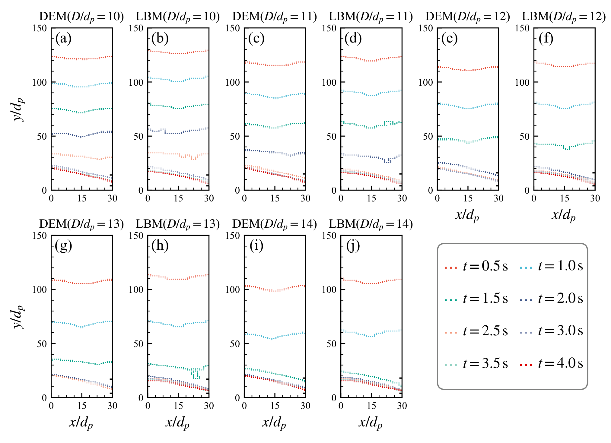
    <figcaption>
        Figure 8: Comparison between DEM and LBM results regarding the temporal evolution of the free surface profiles at time intervals of 0.5 s.
    </figcaption>
</figure>


#### Internal flow structures


The following analysis focuses on the granular silo flow dynamics in DEM and LBM simulations with $D=10d_p$.
[Figure 9](#Fig09) compares the velocity fields from the DEM and LBM simulations at selected time instants.
The LBM velocity fields (bottom row of [Fig. 9](#Fig09)) are generally consistent with the coarse-grained DEM results (top row of [Fig. 9](#Fig09)) in both spatial pattern and velocity magnitude.
For $t \leq 2\,\mathrm{s}$, both methods reproduce the characteristic silo flow pattern.
This pattern, also reported in similar simulations by Zhou et al. [6], comprises three distinct zones: a rapid flow region adjacent to the lateral orifice, a vertical channel flow regime extending from the top of the rapid region to the free surface, and a persistent stagnant zone at the bottom-left corner of the silo.
Owing to the relatively small silo width ($L=30d_p$), lateral wall effects strongly constrain the discharge, giving rise to a vertical channel flow above the orifice rather than a funnel flow pattern.
At $t=2.5\,\mathrm{s}$, the fill height has become shallow, and the lateral contact surfaces facilitating vertical channel flows have also shorten, resulting in a flow pattern that more resembles funnel flow.
The flow in the silo ceases when $t \geq 3.5\,\mathrm{s}$, at which point the final deposits from the DEM and LBM simulations are nearly identical.


<figure>
    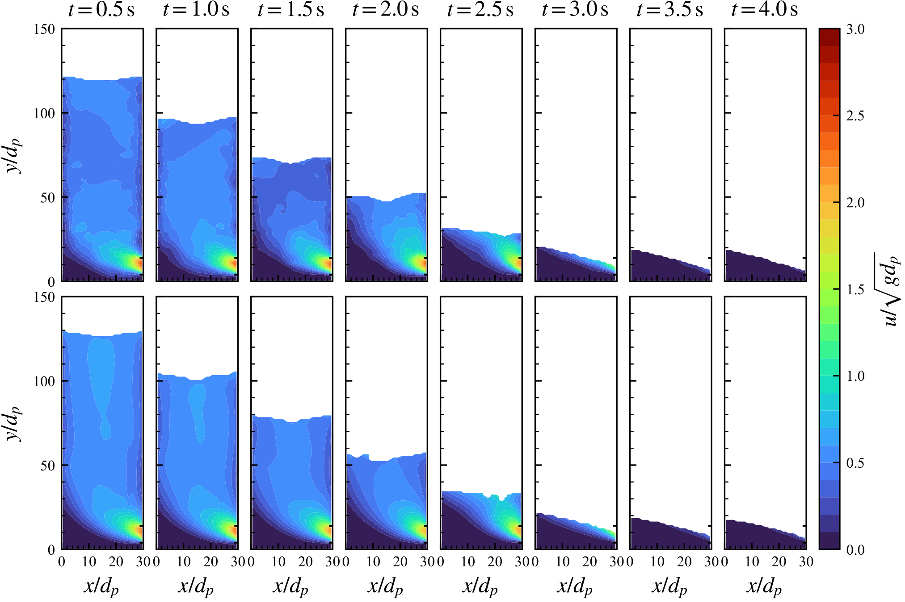
    <figcaption>
        Figure 9: Velocity field of DEM (top row) and LBM (bottom row) results when orifice height is $D=10d_p$. The Navier slip length of lateral walls in LBM simulation is $l_s=2.55d_p$. Each column represents snapshots at the same time.
    </figcaption>
</figure>


It is worth noting that Hung et al. [48] have also conducted experiments and numerical simulations on a similar configuration of silo discharge with lateral orifice, but their velocity field results resembles a typical funnel flow.
The results obtained by Hung et al. [48] are based on a smaller $D/L$ than in this study, thereby resulting in a lower silo discharge rate and stronger resistance in the horizontal direction.
The velocity field around the orifice shown in Hung et al. [48] can propagate only in a limited horizontal distance and cannot reach the opposite lateral wall that without orifice.
Furthermore, Hung et al. [48] and Zhou et al. [6] have pointed out that an increase in silo thickness reduces the influence of friction between the front and rear walls, whereas both the DEM and LBM simulations in this paper focus on the idealized silo with infinite thickness by applying periodic boundary condition.
Consequently, in [Fig. 9](#Fig09), the velocity field near the lateral orifice can rapidly spread horizontally to the opposite lateral wall.


[Figure 10](#Fig10) compares the shear rate $\dot{\gamma}$ from the DEM and LBM simulations at the same time instants as [Fig. 9](#Fig09).
The flow pattern of $\dot{\gamma}$ evolves through two stages.
A high-shear zone develops around the lateral orifice and persists throughout the entire discharge process.
For $t < 2\,\mathrm{s}$, the vertical channel flow regime sits above the high-shear zone, with shear bands on both lateral walls decaying rapidly toward the center.
For $t \geq 2\,\mathrm{s}$, the reduced filling height can no longer sustain a vertical channel flow.
Instead, the shear region is predominantly driven by the orifice discharge.
The LBM results are in good overall agreement with the DEM data in both the spatial distribution and magnitude of $\dot{\gamma}$.
The DEM shear rate, obtained from numerical differentiation of the coarse-grained velocity, exhibits stronger fluctuations than the LBM result owing to the discrete nature of particle motion.
At $t = 3\,\mathrm{s}$, a periodic pattern is observed in the LBM shear-rate field close to the orifice.
According to Körner et al. [38], the free-surface boundary condition (i.e. Eq. \eqref{eqn:korner_frfee_surface_BC}) is recommended to reconstruct half of the distribution function set (except $f_0$ at the lattice center), so that to recover correct hydrodynamic stress.
But, for every interface cell, there is no guarantee that this strict requirement can be satisfied at any time.
Therefore, we tentatively suggest that the periodic patterns around the free surface may be attributable to the limited capability of the free-surface model to resolve the interface configuration at specific instants.
However, it does not appear to influence the overall dynamic behavior of the current LBM simulation.

<figure>
    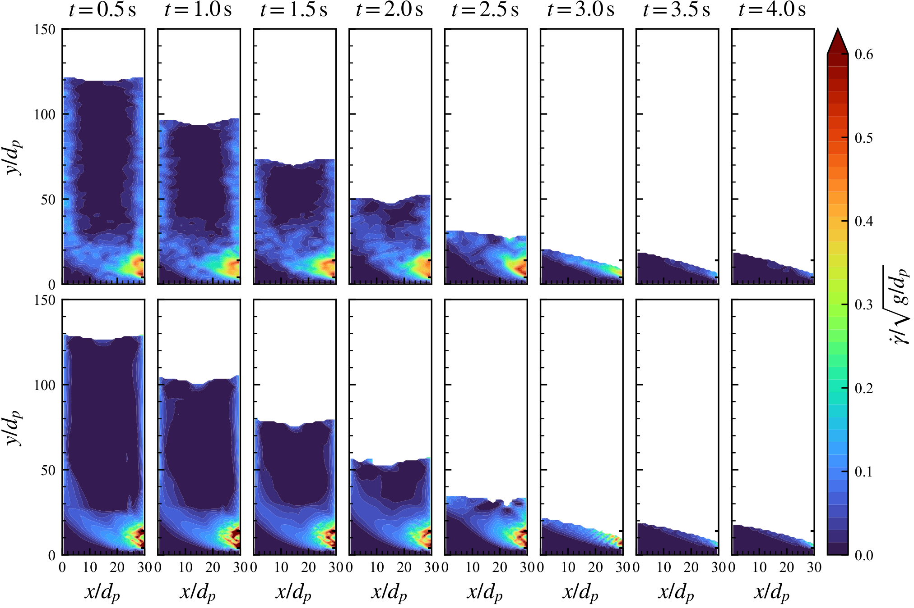
    <figcaption>
        Figure 10: Shear rate field of DEM (top row) and LBM (bottom row) results when orifice height $D=10d_p$. The Navier slip length of lateral walls in LBM simulation is $l_s=2.55d_p$. Each column represents the results at the same time.
    </figcaption>
</figure>


[Figure 11](#Fig11) compares the vertical velocity $u_y$ and shear rate $\dot{\gamma}$ profiles from the DEM and LBM results at different horizontal cross-sections for $D=10d_p$ and $t=1.5\,\mathrm{s}$.
The selected cross-sections are located at $y=9.5d_p$ (near the orifice centerline), $y=25.5d_p$ (near the top of the high-shear region), and $y=50.5d_p$ (within the vertical channel flow regime).
In [Fig. 11(a)](#Fig11), the vertical velocity profiles from both methods are in close agreement across all cross-sections.
At $y=9.5d_p$, the flow is driven by the orifice discharge at the right lateral wall, so $|u_y|$ increases from left to right.
As $y$ increases, the orifice discharge effect spreads across the entire silo width, giving rise to distinct slip velocities on the lateral walls at $y=25.5d_p$ and the characteristic vertical channel flow pattern at $y=50.5d_p$.
For the shear rate comparisons in [Fig. 11(b)](#Fig11), the LBM also captures the overall behavior of the DEM shear rate profiles.
The flow near the orifice ($y=9.5d_p$, $x>20d_p$) is highly variational and corresponds to the high-shear region where the $\mu(I)$ rheology (Eq. \eqref{eqn:muI_rheology}) is less effective, resulting in relatively stronger fluctuations of $\dot{\gamma}$ in LBM data compared with DEM. 
Despite this local discrepancy, the overall agreement remains satisfactory.
At the other two cross-sections (i.e., $y=[25.5 d_p, 50.5 d_p]$), the LBM and DEM results are substantially consistent. 


<figure>
    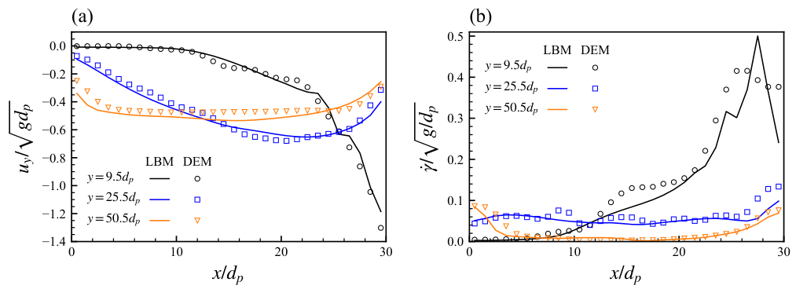
    <figcaption>
        Figure 11:  Horizontal cross-sections of (a) the vertical velocity $u_y$ and (b) the shear rate magnitude $\dot{\gamma}$ for silo flow simulations when $D=10d_p$ and $t= 1.5\,\mathrm{s}$. The points and lines in the same color are DEM and LBM results, respectively.
    </figcaption>
</figure>


We also check whether the scheme in [Sec. 2.3](#model_formulation/mesoscopic_implementation_of_navier_slip_boundary_condition) recovers the prescribed Navier slip behavior in LBM simulations.
[Figure 12](#Fig12) presents the vertical velocity magnitude $|u_y|$ against the shear rate $\dot{\gamma}$ for fluid points nearest to both lateral walls.
For $\dot{\gamma} / \sqrt{g / d_p} > 10^{-2}$, LBM results for all orifice heights $D$ collapse onto the dashed line corresponding to the prescribed Navier slip length $l_s = 2.55 d_p$.
LBM results with smaller $\dot{\gamma}$ and $|u_y|$ originate from the stagnant zone where motion is barely detectable, making the inferred slip lengths naturally deviate from the prescribed value.
Overall, the proposed boundary scheme in [Sec. 2.3](#model_formulation/mesoscopic_implementation_of_navier_slip_boundary_condition) reliably recovers Navier slip boundary behaviors of granular flows across a broad range of shear rates.


<figure>
    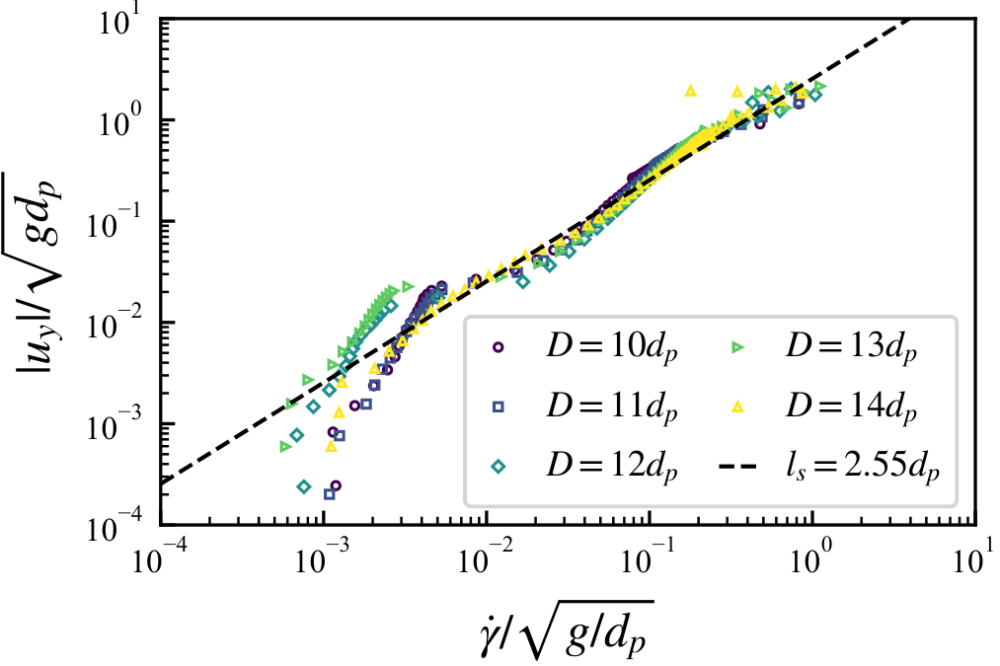
    <figcaption>
        Figure 12: Vertical velocity magnitude $|u_y|$ versus shear rate $\dot{\gamma}$ for fluid nodes nearest to both lateral walls in LBM simulations at $t = 1.0$ s. Colored points correspond to different orifice heights $D$, and the dashed line marks the prescribed Navier slip length $l_s = 2.55 d_p$.
    </figcaption>
</figure>


#### Steady-state flow pattern

To illustrate the steady-state flow pattern in silo flows, [Fig. 13](#Fig13) compares the steady velocity field for LBM simulations within varying $D$.
According to [Fig. 10](#Fig10), the flow regime in the center of the silo generally resembles that of a vertical channel flow.
Debnath et al. [49] have investigated the self-similarity of vertical velocity $u_y$ in steady-state vertical granular channel flow.
For the geometry shown in [Fig. 3](#Fig03), the formula of the velocity profile proposed by Debnath et al. [49] is
\begin{equation}
u_y (x) = - \left\{ |u_{y,\max}| - (|u_{y,\max}| - |u_{y,\text{slip}}|) \cdot \exp\left(-\frac{3}{\delta_{95}} \cdot \min(x, L-x)\right) \right\} 
\label{eqn:Debnath_2022}
\end{equation}
where $|u_{y,\max}|$ is the maximum vertical velocity magnitude, $|u_{y,\text{slip}}|$ is the slip velocity magnitude on the wall, and $\delta_{95}$ is the distance at which $(u_{y,\max} - u_y(\delta_{95})) / (u_y(\delta_{95}) - u_{y,\text{slip}}) = 0.95$.


<figure>
    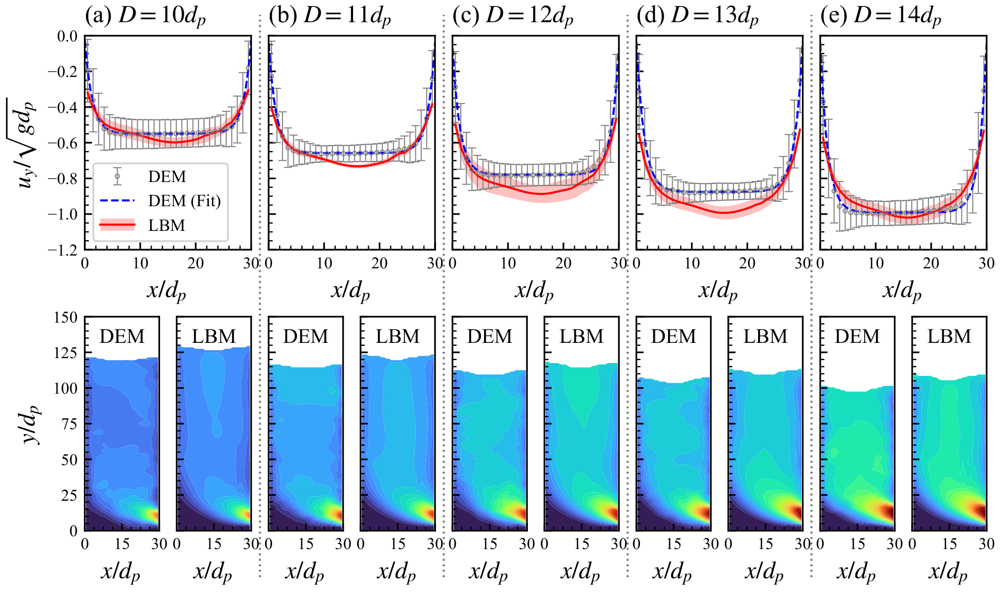
    <figcaption>
        Figure 13: The vertical velocity $u_y$ and velocity magnitude $u$ under varying $D$. The top row of figures~(a-e) shows the comparison of $u_y$ at $y\in[50d_p, 70d_p]$, averaging from $0.5\,\mathrm{s}$ to $0.6\,\mathrm{s}$. The blue dashed lines are Eq. \eqref{eqn:Debnath_2022} with parameters in [Table 2](#Table2), while the gray errorbar and red lines are mean and standard deviation of the DEM and LBM results, respectively. The bottom row are velocity fields at $t=0.5\,\mathrm{s}$, whose colorbars are consistent with [Fig. 9](#Fig09).
    </figcaption>
</figure>


<figure>
    <figcaption id="Table2" style="text-align: center;">
        Table 2: Fitting parameters of Eq. \eqref{eqn:Debnath_2022} obtained from DEM data in [Fig. 13](#Fig13).
    </figcaption>

| $D/d_p$ | $\|u_{y,\max}\|/\sqrt{g d_p}$ | $\|u_{y,\text{slip}}\|/\sqrt{g d_p}$ | $\delta_{95} / d_p$ |
|---------|-------------------------------|--------------------------------------|---------------------|
| 10      | 0.549153                      | 0.025023                             | 4.065758            |
| 11      | 0.657935                      | 0.042361                             | 4.041754            |
| 12      | 0.779605                      | 0.068704                             | 4.064668            |
| 13      | 0.875652                      | 0.032856                             | 4.286065            |
| 14      | 0.991033                      | 0.042756                             | 4.033732            |

</figure>

The top row of [Fig. 13](#Fig13) compares the vertical velocity $u_y$ in the region $y \in [50 d_p, 70 d_p]$, with both DEM particle data and LBM data averaged from $0.5\,\mathrm{s}$ to $0.6\,\mathrm{s}$.
The DEM data are also fitted by Eq. \eqref{eqn:Debnath_2022} with the parameters in [Table 2](#Table2).
The $u_y$ profiles from DEM are consistent with the exponential decay described in Eq. \eqref{eqn:Debnath_2022}, confirming the similarity between slender silo flows and vertical channel flows.
The shear-zone thickness $\delta_{95}$ in [Table 2](#Table2) remains approximately constant at $\delta_{95} \approx 4 d_p$ across all $D$, indicating that the lateral walls only affect a fixed-width shear band irrespective of $D$.
The maximum vertical velocity $|u_{y,\max}|$ in [Table 2](#Table2) is also found to increase with $D$ in a nearly linear way.
The LBM results of $u_y$ capture the slip behavior near the lateral walls accurately for all $D$ considered, aligning well with the corresponding DEM fit curves within shear bands.
At the center of silo, the LBM velocity profile shows a low-gradient curve rather than perfectly uniform plug, which is a consequence of the regularized viscosity in Eq. \eqref{eqn:LBM_muI_viscosity} prevents the recovery of near-zero shear rates.
But, the overall agreement between DEM and LBM results remains satisfactory across all cases.


The bottom row of [Fig. 13](#Fig13) compares the velocity fields from coarse-grained DEM data and LBM data at $t=0.5\,\mathrm{s}$.
The LBM results are in good agreement with the DEM reference for all $D$, reproducing the same spatial patterns discussed in [Sec. 3.3](#discharge_of_granular_silo_with_lateral_orifice/lbm_continuum_simulation).
As $D$ increases, the discharge velocity through the lateral orifice rises, yielding higher $|u_y|$ in the center of the silo.
The free-surface shapes predicted by the two methods follow the same pattern, and the differences in surface position reflect the cumulative mass discharge discrepancy at $t = 0.5\,\mathrm{s}$.
However, as shown in [Fig. 7(b)](#Fig07), the steady-state mass discharge rates from both methods are generally consistent.
Thus, the difference at $t = 0.5\,\mathrm{s}$ is attributable to finite-time fluctuations rather than systematic bias.


## Effect of boundary slippage on silo flow

[Section 3.3](#discharge_of_granular_silo_with_lateral_orifice/lbm_continuum_simulation) shows a good agreement between the DEM and LBM simulations.
Building on validation mentioned above, this section examines how the Navier slip boundary scheme affects the velocity field in granular silo flows.

### Slip-affected granular flow dynamics

To isolate the effect of Navier slip on silo discharge, we perform LBM simulations with $H_0 = 300d_p$, $L = 30d_p$, and $D = 12d_p$, using the same orifice geometry and rheological parameters as in [Sec. 3](#discharge_of_granular_silo_with_lateral_orifice). 
Five Navier slip lengths $l_s/d_p = [0.005,\,0.05,\,0.5,\,1,\,10]$ are applied to the lateral walls, with the no-slip case included as a reference.
[Figure 14](#Fig14) shows the evolution of the mass discharge rate $Q$.
For $t \in [1\,\mathrm{s},\,3\,\mathrm{s}]$, $Q$ increases with $l_s$ for $l_s/d_p < 0.5$. For larger $l_s$, the discharge rate converges to a common upper bound.
Therefore, the effect of $l_s$ on steady discharge rates is strongly nonlinear and saturates rapidly because discharge is strongly confined by the slender geometry and a narrow orifice height.

<figure>
    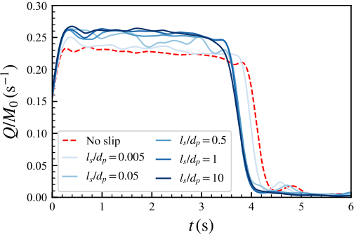
    <figcaption>
        Figure 14: Evolution of the mass discharge rate $Q$ in LBM simulations for orifice height $D = 12 d_p$ and various Navier slip lengths $l_s$ on the lateral walls. $Q$ is normalized by the initial mass $M_0$.
    </figcaption>
</figure>


[Figure 15](#Fig15) shows the shear rate fields at $t = 2\,\mathrm{s}$ for different $l_s$.
The spatial patterns in [Fig. 15](#Fig15) reproduce the flow structure discussed in [Fig. 10](#Fig10).
An increase in $l_s$ accelerates the flow around orifice, resulting in a higher shear rate $\dot{\gamma}$.
For the vertical channel flow region where $y>40d_p$, a larger $l_s$ reduces wall resistance, yielding lower $\dot{\gamma}$ along lateral walls.
According to  Anand et al. [50], the increased wall friction leads to a decrease in mass discharge rate, but the magnitude of the decrease is slight.
Our results supports this phenomenon, indicating that while the discharge rate is influenced by the Navier slip length $l_s$, its upper bound is primarily determined by the orifice height $D$.


<figure>
    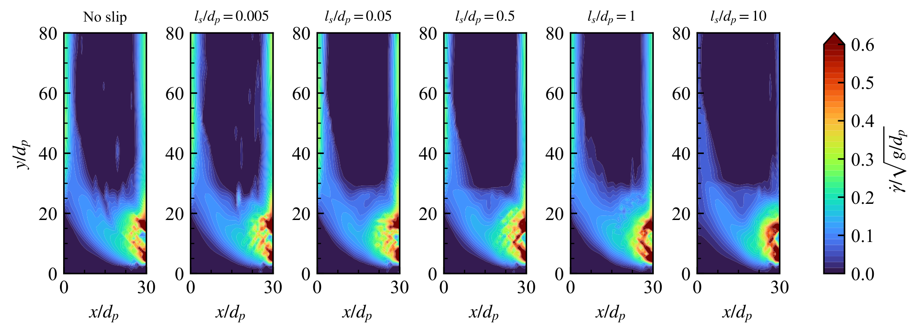
    <figcaption>
        Figure 15: The shear rate $\dot{\gamma}$ in LBM simulations for different Navier slip lengths $l_s$ at $t=2\,\mathrm{s}$.
    </figcaption>
</figure>


To quantify the steady-state flow,  [Fig. 16](#Fig16) average the vertical velocity over the interval $y \in [50d_p,\,80d_p]$, where [Fig. 15](#Fig15) identifies it as the steady-state region.
The shear-zone thickness of all profiles is approximately identical.
For small slip lengths ($l_s \leq d_p$), the velocity profile closely resembles the translation of no-slip profile with a small slip velocity at lateral walls.
For $l_s = 10d_p$, the slip velocity increases noticeably, yet the central velocity is slightly lower than for $l_s = d_p$.
The mean vertical velocities for $l_s = d_p$ and $l_s = 10d_p$ are $-0.806\sqrt{g d_p}$ and $-0.796\sqrt{g d_p}$, respectively.
Their near-equality (difference of about 1%) indicates that the change in velocity profile reflects the saturation of the discharge rate.


<figure>
    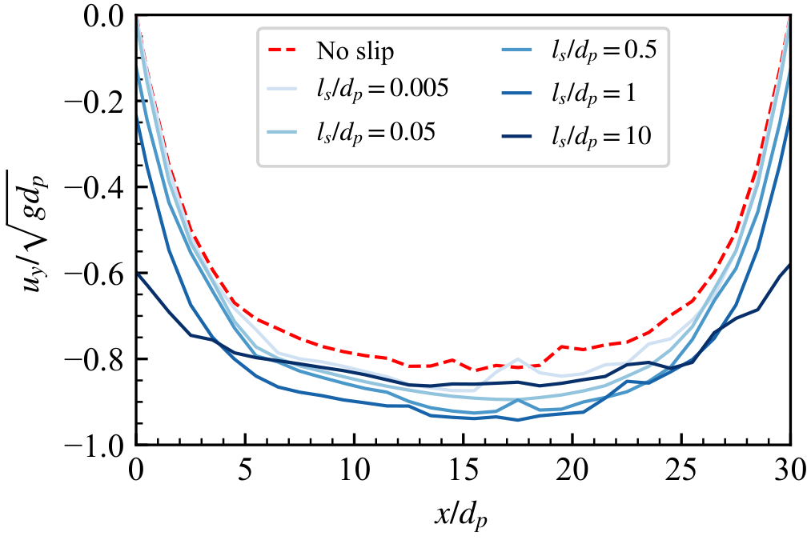
    <figcaption>
        Figure 16: The mean vertical velocity $u_y$ of the LBM simulations for different Navier slip lengths $l_s$ at $t=2\,\mathrm{s}$  (averaged over $y \in [50\,d_p,\,80\,d_p]$).
    </figcaption>
</figure>


These observations motivate a quantitative question: in a slender silo with a lateral orifice, how does the Navier slip length on the lateral walls affect the average steady-state mass discharge rate?
We address this question in [Sec. 4.2](#effect_of_boundary_slippage_on_silo_flow/scaling_law_for_slipenhanced_silo_discharge) using continuum LBM simulations with systematically varied slip lengths $l_s$.


### Scaling law for slip-enhanced silo discharge


<figure>
    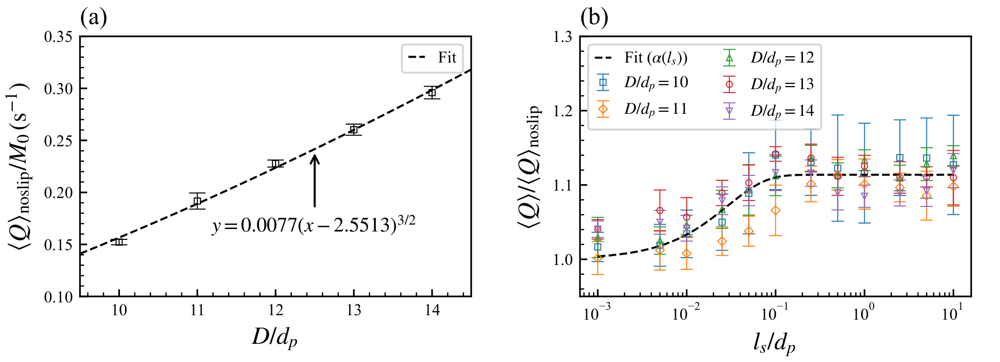
    <figcaption>
        Figure 17: Scaling law for the average steady mass discharge rate $\langle Q \rangle$. (a) The $\langle Q \rangle_{\text{noslip}}$ as a function of orifice height $D$ for no-slip lateral walls. The dashed line is the Beverloo fit. (b) The $\langle Q \rangle / \langle Q \rangle_{\text{noslip}}$ versus Navier slip length $l_s$. The dashed line is the proposed fit function Eq. \eqref{eqn:Q_scaling_coef}. Error bars denote the standard deviation of the time series.
    </figcaption>
</figure>


[Figure 17](#Fig17) presents $\langle Q \rangle$ for lateral walls with different Navier slip lengths $l_s$, where $\langle Q \rangle$ denote the time-averaged steady mass discharge rate in LBM simulations with $H_0 = 300d_p$ and $L = 30d_p$.
In [Fig. 17(a)](#Fig17), the no-slip results of $\langle Q \rangle$ are presented with orifice heights $D=[10d_p,11d_p,12d_p,13d_p,14d_p]$.
The LBM simulations are expected to follow the classical Beverloo correlation, since we omit front and back wall friction.
For a two-dimensional silo, Mankoc et al. [5] showed that $\langle Q \rangle \propto (D - k)^{3/2}$, where $k$ is the minimum orifice height below which flow ceases.
Following this form, the dashed line in [Fig. 17(a)](#Fig17) represents the fit $\langle Q \rangle_{\text{noslip}} / M_0 = 0.007702 \, (D/d_p - 2.551302)^{3/2}$.


LBM simulations are also performed with Navier slip lengths $l_s/d_p = [0.001, 0.005, 0.01,  0.025, 0.05, 0.1,  0.25, 0.5, 1,  2.5, 5, 10]$, as shown in [Fig. 17(b)](#Fig17).
The discharge rates $\langle Q \rangle$ are normalized by $\langle Q \rangle_{\text{noslip}}$ under the assumption that the effects of $l_s$ and $D$ on $\langle Q \rangle$ are independent.
The ratio $\alpha \equiv \langle Q \rangle / \langle Q \rangle_{\text{noslip}}$ exhibits a rapidly saturating dependence on $l_s$. To capture this behavior, we propose
\begin{equation}
    \alpha(l_s) 
    \equiv \langle Q \rangle / \langle Q \rangle_{\text{noslip}}
    = 1 + \bigl[1 - \exp(- l_s / l_0) \bigr] \, \Delta_{Q},
    \label{eqn:Q_scaling_coef}
\end{equation}
where $\Delta_{Q}$ and $l_0$ are fitting parameters.
The dashed curve in [Fig. 17(b)](#Fig17) corresponds to Eq. \eqref{eqn:Q_scaling_coef} with $\Delta_{Q} = 0.114$ and $l_0 / d_p = 0.0289$.


<figure>
    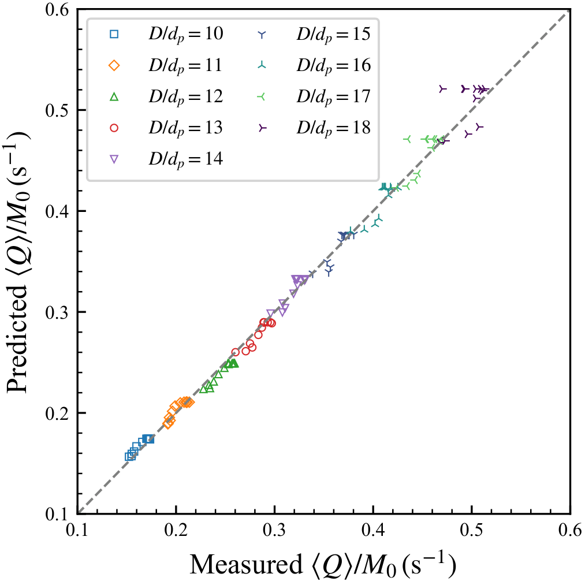
    <figcaption>
        Figure 18: Comparison between measured $\langle Q \rangle / M_0$ from LBM simulations and predictions computed from Eq. \eqref{eqn:Q_scaling_coef} combined with the Beverloo fit from [Fig. 17(a)](#Fig17). The gray dashed line is $y = x$ for the ideal agreement.
    </figcaption>
</figure>


[Figure 18](#Fig18) compares the measured $\langle Q \rangle$ from LBM simulations against the predictions of Eq. \eqref{eqn:Q_scaling_coef}, in which $\langle Q \rangle_{\text{noslip}}$ is evaluated from the Beverloo fit in [Fig. 17(a)](#Fig17).
To validate the universality of the proposed scaling law, additional LBM results are also included for $D=[15 d_p, 16 d_p, 17 d_p, 18 d_p]$, with all the Navier slip lengths tested.
The data for all $D$ and $l_s$ generally collapse around the ideal $y = x$ line, confirming that the proposed scaling law captures the combined dependence of the discharge rate on the orifice height $D$ and the Navier slip length $l_s$ with good accuracy.


The present finding that Navier slip enhances discharge in narrow silos, complements earlier work by Staron et al. [16], who reported a minor influence of lateral-wall boundary conditions in bottom-orifice silos using a granular continuum approach.
The apparent difference stems from the silo geometry.
Staron et al. [16] considered a relatively wide silo ($L = 180 d_p$) with a low filling height ($H_0 = 90 d_p$), where wall effects are confined to a thin lateral boundary layer and do not reach the central flow, leading to a typical funnel flow type.
In contrast, the present narrower silo ($L = 30 d_p$, $H_0=[150d_p,300d_p]$) has a lateral boundary layer that occupies a significant fraction of the cross-section, enhancing Navier slip effect on the discharge rate.
This interpretation is consistent with Zhang et al. [20], who found that wall friction affects $\langle Q \rangle$ more strongly when $H_0$ is large, and with classical silo experiments showing that $L$ does not influence the discharge rate once it exceeds a threshold [51].


To apply the proposed scaling law in practice, the Navier slip length $l_s$ must be determined.
A recent study by Song et al. [26] on granular column collapse reported a potential correlation between the basal Navier slip length $l_s$ and the wall roughness index $R_a$ proposed by Jing et al. [52].
In [Sec. 3](#discharge_of_granular_silo_with_lateral_orifice), we found that $l_s=2.55d_p$ and $R_a=0.5$, showing well agreement with those of Song et al. [26] (who found $l_s=2.57d_p$ when $R_a=0.55$).
Therefore, further investigation on the systematic relationship between $R_a$ and $l_s$ is warranted, which can potentially allow the direct determination of $l_s$ through the geometric roughness index of the wall surface $R_a$ without additional parameter calibration.


## Conclusions

In this paper, we develop a unified continuum framework that integrates the $\mu(I)$ rheology with the Navier slip boundary condition within lattice Boltzmann method (LBM), enabling systematic investigation of Navier slip effects in granular silo flows.
Granular flows are treated as viscoplastic fluids, governed by $\mu(I)$ rheology and solved via LBM with a free-surface model.
The LBM implementation of Navier slip boundary represents intermediate slip state as a weighted average of the no-slip and free-slip limits, where the weighting coefficient is analytically linked to the Navier slip length $l_s$, thereby providing a physically grounded and computationally tractable boundary model for granular continuum.

Rectangular silo discharge with a lateral orifice have been simulated by the discrete element method (DEM) across different orifice heights $D$ to generate reference data.
Coarse-graining on DEM data reveals a consistent Navier slip length and rheological parameters, which enable the LBM continuum model to reproduce both macroscopic and microscopic features of the DEM reference with quantitative fidelity, in terms of mass discharge evolution, free-surface morphology, velocity profiles, and shear rate fields.
Self-consistency verification further confirms that the LBM boundary scheme recovers the prescribed $l_s$ over a wide range of shear rates, confirming the reliability of the Navier slip implementation.


LBM simulations of lateral Navier slip have been conducted.
Increasing $l_s$ reduces the resistance of the lateral walls, accelerating the flow along the walls and around the orifice.
Quantifying the effect of $l_s$ on steady discharge rate $\langle Q \rangle$, we propose a modified discharge scaling law $\langle Q \rangle = \alpha(l_s) \cdot \langle Q \rangle_{\text{noslip}}(D)$.
The no-slip discharge rate obeys the classical Beverloo correlation $\langle Q \rangle_{\text{noslip}} \propto (D - k)^{3/2}$, and the amplification factor $\alpha(l_s) = 1 + [1 - \exp(-l_s/l_0)]\,\Delta_Q$ captures a nonlinear, rapidly saturating dependence on $l_s$, with $l_0/d_p = 0.0289$ and $\Delta_Q = 0.114$.
The scaling law of steady discharge rate confirms that $l_s$ and $D$ act independently on $\langle Q \rangle$, and $\langle Q \rangle$ is enhanced only when $l_s \ll d_p$ and converges beyond $l_s \sim d_p$.
Such saturation is also corroborated by the velocity fields, in which the mean vertical velocity varies by only about 1% between $l_s = d_p$ and $l_s = 10 d_p$ while the slip velocity increases noticeably, indicating the influence of additional Navier slip length confined to the near-wall region and no longer accelerates the bulk flow.


The present LBM framework, incorporated $\mu(I)$ rheology and Navier slip boundary modeling, provides an efficient and physically consistent description of dense granular flows.
In silo discharge simulations, the LBM model quantitatively recovers the corresponding DEM results, and has been successfully employed in the study of scaling law for slip-enhanced silo discharge. 
The advantage of the proposed framework is most pronounced in large-scale systems, where DEM simulations become prohibitively expensive.
Further systematic study across initial aspect ratios and nonlocal constitutive relations would establish the generality of the scaling law and reconcile the present findings with the negligible slip influence reported for wide silos.
Future work will also extend to three-dimensional configurations, to develop a versatile granular continuum model for engineering and geophysical applications. 


---

(##) Appendix A: Single-phase free-surface model in lattice Boltzmann method <span id="AppendixA"></span>

The single-phase free-surface model introduces lattice mass $m$ and fluid volume fraction $\varepsilon = m / \rho$ to distinguish cell state: $\varepsilon=1$ for fluid cell,  $\varepsilon=0$ for solid cell, and $\varepsilon \in (0,1)$ for interface cell.
For any non-gas cell at $\boldsymbol{x}$, its mass exchange process is conducted after the collision step of LBM, and distribute mass according to the post-collision distribution function $f_{i}^{pc}$,
\begin{equation}
    m(\boldsymbol{x}, t+\delta_t) = 
    m(\boldsymbol{x}, t) +  \sum_{i=1}^{8} \Delta m_{i} (\boldsymbol{x}, t+ \delta_t).
    \tag{A1}
\end{equation}
The $\Delta m_{i} (\boldsymbol{x}, t+ \delta_t)$ is the mass exchange between $\boldsymbol{x}$ and $\boldsymbol{x}+\boldsymbol{c}_{i} \delta_t$ given by
\begin{equation}
    \Delta m_{i} (\boldsymbol{x}, t+ \delta_t) = \Delta f_{i} (\boldsymbol{x}, t) \cdot \frac{\varepsilon(\boldsymbol{x},t) + \varepsilon(\boldsymbol{x} + \boldsymbol{c}_i \delta_t,t)}{2},
    \tag{A2}
\end{equation}
where $\Delta f_{i} (\boldsymbol{x}, t)$ is the flux of distribution function along $\boldsymbol{c}_i$, depending on the cell state of both $\boldsymbol{x}$ and $\boldsymbol{x} + \boldsymbol{c}_i \delta_t$.
The detailed amount of $\Delta f_{i} (\boldsymbol{x}, t)$ is given by Körner et al.
[38].

The free-surface boundary condition is applied to interface cell $\boldsymbol{x}$ to reconstruct the unknown distribution functions from gas cells [38], see the blue dashed arrows in [Fig. 1](#Fig01),
\begin{equation}
    f_{-i}(\boldsymbol{x}, t + \delta_t) = f_{i}^{eq} (\rho_A, \boldsymbol{u}_A) + f_{-i}^{eq} (\rho_A, \boldsymbol{u}_A) - f_{i}^{pc}(\boldsymbol{x}, t).
    \tag{A3}
    \label{eqn:korner_frfee_surface_BC}
\end{equation}
$\rho_A = 1$ is the gas density, which is equivalent to zero gauge pressure. The gas velocity, denoted by $\boldsymbol{u}_A$, is assumed to be the same as the fluid velocity at the interface cell $\boldsymbol{x}$.

After mass exchange, the interface cells with $m > \rho$ and $m < 0$ would be transformed into new fluid and gas cells, respectively, while new interface cells are also converted from their surrounding fluid cells for updating the valid free surface.
The initial distribution functions of these new interface cells are defined as the equilibrium state calculated from the average of surrounding density and velocity.
The excess mass from new fluid cells ($m - \rho$) and new gas cells ($-m$) would be distributed among their surrounding interface cells uniformly.
The details of the cell type conversion process are available from Körner et al.
[38] and Thürey and Rüde [39].


To confirm the rationality of neglecting the air drag in the free surface model, we briefly estimate the magnitude of air drag force $F_{drag}$ and particle gravity $F_g$.
The drag force magnitude is generally written as [53]
\begin{equation}
    F_{drag} = \frac{A_c}{2} \rho_g C_D v_{rel}^2,
    \text{ with } C_D =\frac{24}{\mathrm{Re}} (1 + 0.15 \times \mathrm{Re}^{0.687}), \,
    \mathrm{Re} =\frac{\rho_g v_{rel} d_p}{\mu_g}
    \tag{A4}
\end{equation}
where $v_{rel}$ is the magnitude of relative velocity between particle and gas, $d_p$ is the particle diameter, $A_c = \pi d_p^2 / 4$ is the cross-sectional area perpendicular to the velocity direction.
The $\rho_g = 1.29\,\mathrm{kg/m^3}$ and $\mu_g = 1.81 \times 10^{-5}\,\mathrm{Pa \cdot s}$ are density and dynamic viscosity of the air.
With the particle properties listed in [Table 1](#Table1) and $v_{rel}=3\sqrt{g d_p}$, which is greater than the maximum particle velocity observed in all cases, we can estimate that the drag force and gravity magnitudes are $F_{drag}=1.1271 \times 10^{-7}\,\mathrm{N}$ and $F_{g}=1.3612 \times 10^{-5}\,\mathrm{N}$, respectively.
Since $F_{drag}$ is two orders smaller than $F_g$, the air drag is practically negligible in the continuum simulation of dense granular flows.


(##) Appendix B: Randomness of DEM simulation <span id="AppendixB"></span>


<figure>
    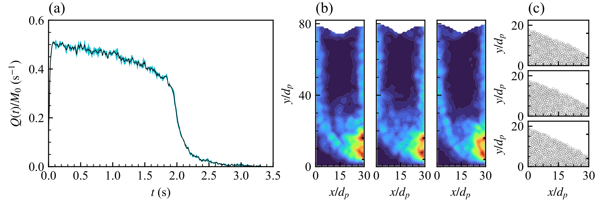
    <figcaption>
        Figure 19: DEM simulation results under three different random seeds. (a) Evolution of the mass discharge rate $Q$, which is scaled by initial mass $M_0$. The black line and cyan band are the mean and standard deviation of simulations, respectively. (b) The shear rate $\dot{\gamma}/\sqrt{g/d_p}$ of DEM simulations at $t=1\,\mathrm{s}$, whose colorbars are consistent with [Fig. 10](#Fig10). (c) The final deposits of DEM simulations.
    </figcaption>
</figure>


To verify the randomness of DEM simulations, three different random seeds are adopted to simulate the case with $D=12d_p$ and $H_0=150d_p$.
The detail of DEM simulations can be found in [Sec. 3.1](#discharge_of_granular_silo_with_lateral_orifice/numerical_setup).
[Figure 19(a)](#Fig19) presents the temporal evolution of the mass discharge rate $Q$, where the black line and the cyan band are the mean and standard deviation of three DEM simulations. 
The standard deviation of three simulation results deviates slightly from their mean.
[Figure 19(b)](#Fig19) presents the coarse-grained shear rate field of three simulations at $t=1\,\mathrm{s}$, showing both consistent free surfaces as well as consistent shear rate distributions.
The final deposits shown in [Fig. 19(c)](#Fig19) also exhibit roughly the same morphology.
Therefore, in DEM simulations, the change of random seed only affects the initial particle arrangement, but its effect on the overall silo flow dynamics is negligible in this study.


(##) Appendix C: Coarse graining of discrete particle data <span id="AppendixC"></span>

The coarse graining technique is applied to discrete particle data to extract continuum fields related to granular flow rheology, such as density, velocity and stress tensor.
In this paper, the coarse graining method proposed by Weinhart et al. [54] is introduced.
Assume a mono-disperse granular system consists of $N$ spheres, where the $i$-th spheres located at $\boldsymbol{r}_i(t)$ with its mass $m_i$ and velocity $\boldsymbol{u}_i(t)$ ($i \in [1,...,N]$). The Gaussian function $W(\boldsymbol{r})$ is introduced as coarse graining weight function:
\begin{equation}
    W(\boldsymbol{r}) = \begin{cases}
    \exp{\left(- \frac{\vert\boldsymbol{r}\vert^2}{2 \mathrm{w}} \right) / V_w} ,& 
    {\vert\boldsymbol{r}\vert} < \mathrm{c} \\
    0 ,& \text{otherwise}
    \end{cases},
    \tag{C1}
\end{equation}
where the $\mathrm{w}$ is coarse graining width, $\mathrm{c} = 3 \mathrm{w}$ is cut-off length, and $V_w$ is the coefficient defined as [55]
\begin{equation}
    V_w = 2 \sqrt{2} \cdot \mathrm{w}^3 \pi^{\frac{3}{2}} \mathrm{erf}\left( \frac{\mathrm{c}}{\sqrt{2} \mathrm{w}} \right) - 4 \mathrm{c} \mathrm{w}^2 \pi \exp{\left( \frac{- \mathrm{c}^2}{2 \mathrm{w}^2} \right)}.
    \tag{C2}
\end{equation}
Weinhart et al. [54] recommend $\mathrm{w}/d_p \in [0.75, 1.25]$, where the $d_p$ is mean particle diameter.
In this study, we use $\mathrm{w}=d_p$.


For the coarse grained data at location $\boldsymbol{r}$ at time $t$, its coarse grained density $\rho(\boldsymbol{r}, t)$ is
\begin{equation}
    \rho(\boldsymbol{r}, t) = \sum\limits_{i \in Q} m_i W(\boldsymbol{r} - \boldsymbol{r}_{i}(t)),
    \tag{C3}
\end{equation}
and its coarse grained velocity $\boldsymbol{U}(\boldsymbol{r}, t)$ is obtained by coarse grained momentum $\boldsymbol{j}(\boldsymbol{r}, t)$,
\begin{equation}
    \boldsymbol{j}(\boldsymbol{r}, t)  = \rho(\boldsymbol{r}, t) \cdot \boldsymbol{U}(\boldsymbol{r}, t) = \sum\limits_{i \in Q} m_i \boldsymbol{u}_i (t) \cdot W(\boldsymbol{r} - \boldsymbol{r}_{i}(t)).
    \tag{C4}
\end{equation}
With coarse grained fields defined above, the strain rate tensor $[\boldsymbol{\dot{\gamma}}] = \dot{\gamma}_{\alpha\beta}(\boldsymbol{r}, t)$ is
\begin{equation}
    \dot{\gamma}_{\alpha\beta}(\boldsymbol{r}, t) = \frac{\partial U_\alpha(\boldsymbol{r}, t)}{\partial x_\beta} + \frac{\partial U_\beta(\boldsymbol{r}, t)}{\partial x_\alpha}.
    \tag{C5}
\end{equation}
The strain rate deviator is $\dot{\gamma}_{\alpha\beta}^{d}(\boldsymbol{r}, t) = \dot{\gamma}_{\alpha\beta}(\boldsymbol{r}, t) - \mathrm{tr}([\boldsymbol{\dot{\gamma}}]) \delta_{ij} / 3$.
Then the shear rate magnitude $\dot{\gamma}$ is defined as the second invariant of $\dot{\gamma}_{\alpha\beta}^{d}$, i.e. $\dot{\gamma} = \sqrt{{\gamma}_{\alpha\beta}^{d} {\gamma}_{\alpha\beta}^{d} / 2}$.


The coarse grained stress tensor $[\boldsymbol{\sigma}(\boldsymbol{r}, t)] = \sigma_{\alpha\beta}(\boldsymbol{r}, t)$ is defined as
\begin{equation}
    \sigma_{\alpha\beta}(\boldsymbol{r}, t) = \sigma_{\alpha\beta}^{(k)}(\boldsymbol{r}, t) + \sigma_{\alpha\beta}^{(c)}(\boldsymbol{r}, t),
    \label{eqn:Appendix_CG_sigma}
    \tag{C6}
\end{equation}
which is the sum of the part contributed by kinetic energy, $\sigma_{\alpha\beta}^{(k)}(\boldsymbol{r}, t)$, and the part contributed by contact force, $\sigma_{\alpha\beta}^{(c)}(\boldsymbol{r}, t)$.
The solid pressure is  $p(\boldsymbol{r}, t) = \mathrm{tr}([\boldsymbol{\sigma}(\boldsymbol{r}, t)]) / 3$, and the shear stress tensor is $\tau_{\alpha\beta}(\boldsymbol{r}, t) = \sigma_{\alpha\beta}(\boldsymbol{r}, t) - p(\boldsymbol{r}, t) \cdot \delta_{\alpha\beta}$.
The shear stress magnitude is $\sigma = \sqrt{\tau_{\alpha\beta} \tau_{\alpha\beta} /2}$.


The kinetic part in Eq. \eqref{eqn:Appendix_CG_sigma} is defined as
\begin{equation}
    \sigma_{\alpha\beta}^{(k)}(\boldsymbol{r}, t) = \sum\limits_{i \in N} m_i v_{i,\alpha}^{'} v_{i,\beta}^{'} W(\boldsymbol{r} - \boldsymbol{r}_{i}(t)),
    \tag{C7}
\end{equation}
where $\boldsymbol{v}_{i}^{'} = \boldsymbol{u}_i(t) - \boldsymbol{U}(\boldsymbol{r}, t)$ is the velocity fluctuation of $i$-th particle, and $v_{i,\alpha}^{'}$ is the $\alpha$ component of $\boldsymbol{v}_{i}^{'}$.
The contact force part in Eq. \eqref{eqn:Appendix_CG_sigma} is defined as
\begin{equation}
    \sigma_{\alpha\beta}^{(c)}(\boldsymbol{r}, t) = \sum\limits_{i \in N} \sum\limits_{j \in \tilde{N}}^{j \neq i} F_{ij,\alpha} l_{ij,\beta} \int_{0}^{1} W(\boldsymbol{r} - \boldsymbol{r}_{i}(t) + s \boldsymbol{l}_{ij}) \mathrm{d}s,
    \tag{C8}
\end{equation}
where $\tilde{N}$ is a set contains all particle contacted with the $i$-th particle, $\boldsymbol{F}_{ij}$ is contact force vector received by particle $i$ from $j$, and $\boldsymbol{l}_{ij}$ is contact branch vector between two particles (pointing from $i$ to $j$).


(##) Appendix D: Sensitivity of rheological parameters <span id="AppendixD"></span>

The $\mu(I)$ parameter identification in [Sec. 3.2](#discharge_of_granular_silo_with_lateral_orifice/dem_simulation_and_parameter_identification) was performed using coarse-grained DEM data spanning the entire flow regimes.
According to [Fig. 6](#Fig06), the majority of DEM coarse-grained data lie in the range $I \le 0.2$.
However, as suggested by [Fig. 5](#Fig05), the discharge process is driven by the high-velocity, high-shear region near the orifice.
Thus, how the high-inertial-number region near the orifice affects the flow is an important question to address.


[Figure 20(a)](#Fig20) analyzes the spatial distribution of the inertial number $I$ in the DEM data.
The color of each point represents the distance from its corresponding DEM coarse-grained point to the orifice center, denoted as $R_D$.
Notably, DEM data with $I > 0.2$ are located in closer proximity to the orifice (i.e., smaller $R_D$), confirming that the region with higher $I$ is located around the orifice.
Although these points constitute a minor fraction, they may play an important role in controlling the overall discharge rate.


<figure>
    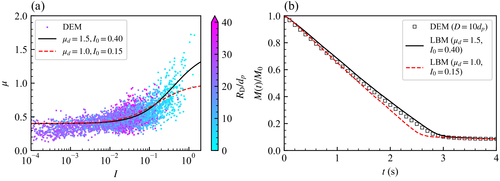
    <figcaption>
        Figure 20: Influence of high inertial number region on LBM simulations. (a) The DEM scatters in [Fig. 6](#Fig06) and two different $\mu(I)$ curves, where $R_D$ is the distance from the spatial position of DEM coarse-grained point to the center of orifice. (b) The residual mass $M$ in LBM simulation results when $D=10d_p$ and $l_s=2.55d_p$, with comparisons to corresponding DEM results (squares).
    </figcaption>
</figure>


To validate this hypothesis, we employ an additional $\mu(I)$ parameter set $(\mu_s=0.4,\ \mu_d=1.0,\ I_0=0.15)$ as a test case.
As shown in [Fig. 20(a)](#Fig20), its rheological curve closely matches the $\mu(I)$ rheology identified in [Sec. 3.2](#discharge_of_granular_silo_with_lateral_orifice/dem_simulation_and_parameter_identification) for $I \le 0.2$.
[Figure 20(b)](#Fig20) compares the evolution of the residual mass $M$ from LBM simulations with different $\mu(I)$ parameter sets ($D=10d_p$, $l_s=2.55d_p$).
The LBM result using the additional test case exhibits a higher mass discharge rate than the corresponding DEM result, whereas the LBM result from [Sec. 3.2](#discharge_of_granular_silo_with_lateral_orifice/dem_simulation_and_parameter_identification) yields a flow pattern more consistent with the DEM data.
Therefore, when extracting $\mu(I)$ rheological parameters from DEM data, it is necessary to account for the high-inertial-number region to achieve more accurate continuum simulations.
In practice, as noted by Barker et al. [56], larger values of $I_0$ are recommended to ensure a wider well-posed range for the $\mu(I)$ rheology.


<figure>
    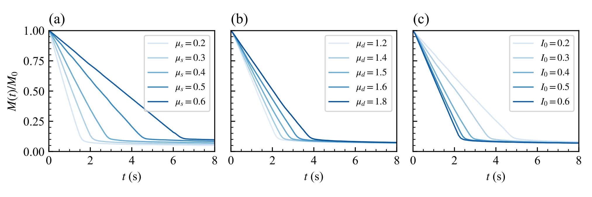
    <figcaption>
        Figure 21: Influence of $\mu(I)$ parameters on the residual mass in the silo $M(t)$ of LBM simulations: (a) $\mu_d=1.5$, $I_0=0.4$; (b) $\mu_s=0.4$, $I_0=0.4$; (c) $\mu_s=0.4$, $\mu_d=1.5$.
    </figcaption>
</figure>


[Figure 21](#Fig21) presents the mass evolution in the silo from LBM simulations with varying $\mu(I)$ parameters, quantifying the sensitivity of the flow to each rheological parameter individually.
The $\mu(I)$ parameter set from [Sec. 3.2](#discharge_of_granular_silo_with_lateral_orifice/dem_simulation_and_parameter_identification) ($\mu_s=0.4$, $\mu_d=1.5$, $I_0=0.4$) serves as the reference.
The orifice height and the Navier slip length at the lateral walls are fixed at $D=10d_p$ and $l_s=2.55d_p$, respectively.
In [Fig. 21(a)](#Fig21), a larger $\mu_s$ corresponds to stronger frictional effects and a larger repose angle, leading to a slower flow rate and a larger final residual mass.
In [Fig. 21(b)](#Fig21) , decreasing $\mu_d$ reduces the overall friction, thereby increasing the flow rate. However, this enhancement diminishes as $\mu_d$ becomes sufficiently small.
[Figure 21(c)](#Fig21)  shows that a smaller $I_0$ yields a smaller mass discharge rate.
This occurs because a lower $I_0$ slows the approach of Eq. \eqref{eqn:muI_rheology} toward its upper bound $\mu_d$, resulting in enhanced friction.
When $I_0$ is relatively large (e.g., $I_0 = [0.5, 0.6]$), the flow rates are similar, as the $\mu(I)$ relationships are comparable in the low-inertial-number regime.

Similar parametric studies of $\mu(I)$ rheology have been conducted by Lagrée et al. [57] and Staron et al. [16].
Lagrée et al. [57] found that $\mu(I)$ parameters have only minor effects on granular column collapse, whereas Staron et al. [16] reported trends similar to those in [Fig. 21](#Fig21) for silo flows.
A likely explanation for this difference lies in the geometrical flow configuration.
In granular column collapse, the normal stress acts perpendicular to the basal surface and typically exceeds the shear stress; consequently, the flow is governed by the intermediate-$I$ regime and the unstable free surface.
In silo flows, by contrast, the lateral walls are parallel to the direction of gravitational acceleration, which amplifies the shear effects induced by gravity.
Furthermore, the silo discharge is predominantly driven by the high-$I$ region near the orifice, making the flow more sensitive to rheological parameters.

<!-- 
<figure>
    
    <figcaption>
        Sketch of the granular silo flow with lateral orifice. (a) DEM simulation setup at $t=0$. The light grey particles are moving particles, particles in red are basal wall particles. (b) Arrangement of the right lateral wall and the orifice. (c) Hertz-Mindlin contact model of particles.
    </figcaption>
</figure>
-->


---

(##) Acknowledgments

This research was developed under the support of the Guangdong basic and applied basic research foundation project No. 2025A1515012962.

---


[1] K. Saleh, S. Golshan, and R. Zarghami, [Chemical Engineering Science **192**, 1011 (2018)](https://doi.org/10.1016/j.ces.2018.08.028). 

[2] Gotthilf Heinrich Ludwig Hagen, in _Bericht über die zur Bekanntmachung geeigneten Verhandlungen der Königl_ (Akademie der Wissenschaften zu Berlin, 1852) pp. 35-42. 

[3] W. Beverloo, H. Leniger, and J. van de Velde, [Chemical Engineering Science **15**, 260 (1961)](https://linkinghub.elsevier.com/retrieve/pii/0009250961850306). 

[4] B. P. Tighe and M. Sperl, [Granular Matter **9**, 141 (2007)](https://doi.org/10.1007/s10035-006-0027-x). 

[5] C. Mankoc, A. Janda, R. Arévalo, J. M. Pastor, I. Zuriguel, A. Garcimartín, and D. Maza, [Granular Matter **9**, 407 (2007)](https://doi.org/10.1007/s10035-007-0062-2). 

[6] Y. Zhou, P.-Y. Lagrée, S. Popinet, P. Ruyer, and P. Aussillous, [Journal of Fluid Mechanics **829**, 459 (2017)](https://doi.org/10.1017/jfm.2017.543). 

[7] A. Janda, I. Zuriguel, and D. Maza, [Physical Review Letters **108**, 248001 (2012)](https://doi.org/10.1103/PhysRevLett.108.248001). 

[8] A. Bhateja, [Physical Review E **102**, 042904 (2020)](https://doi.org/10.1103/PhysRevE.102.042904). 

[9] G. Sun, Q. Chen, R. Li, T. Mu, and H. Yang, [Powder Technology **449**, 120438 (2025)](https://doi.org/10.1016/j.powtec.2024.120438). 

[10] T. Mu, Q. Chen, G. Sun, Y. Xu, R. Li, and H. Yang, [Advanced Powder Technology **37**, 105259 (2026)](https://doi.org/10.1016/j.apt.2026.105259). 

[11] R. Maiti, G. Das, and P. K. Das, [Powder Technology **301**, 1054 (2016)](https://doi.org/10.1016/j.powtec.2016.07.054). 

[12] H. Guo, X. Yang, Z. Tian, T. Li, Y. Hu, C. Gao, and X. Liu, [Powder Technology **465**, 121310 (2025)](https://doi.org/10.1016/j.powtec.2025.121310). 

[13] R. Blanco-Rodríguez, R. C. Hidalgo, G. Pérez-Angel, and D. Maza, [Granular Matter **23**, 86 (2021)](https://doi.org/10.1007/s10035-021-01159-6). 

[14] P. Jop, Y. Forterre, and O. Pouliquen, [Nature **441**, 727 (2006)](https://doi.org/10.1038/nature04801). 

[15] P. Jop, [Comptes Rendus. Physique **16**, 62 (2015)](https://doi.org/10.1016/j.crhy.2014.12.001). 

[16] L. Staron, P. Y. Lagrée, and S. Popinet, [The European Physical Journal E **37**, 5 (2014)](https://doi.org/10.1140/epje/i2014-14005-6). 

[17] T. Tian, J. Su, J. Zhan, S. Geng, G. Xu, and X. Liu, [Particuology **36**, 127 (2018)](https://doi.org/10.1016/j.partic.2017.04.001). 

[18] C.-C. Lin and F.-L. Yang, [Physics of Fluids **33**, 093302 (2021)](https://doi.org/10.1063/5.0057598). 

[19] S. Dunatunga and K. Kamrin, [Journal of Fluid Mechanics **940**, A14 (2022)](https://doi.org/10.1017/jfm.2022.241). 

[20] S. Zhang, P. Lin, C.-L. Wang, Y. Tian, J.-F. Wan, and L. Yang, [Granular Matter **16**, 857 (2014)](https://doi.org/10.1007/s10035-014-0533-1). 

[21] M. W. Richman, [Acta Mechanica **75**, 227 (1988)](https://doi.org/10.1007/BF01174637). 

[22] D. Vescovi, A. S. De Wijn, G. L. W. Cross, and D. Berzi, [Soft Matter **20**, 8702 (2024)](https://doi.org/10.1039/D4SM00831F). 

[23] R. Artoni, A. C. Santomaso, M. Go’, and P. Canu, [Physical Review Letters **108**, 238002 (2012)](https://doi.org/10.1103/PhysRevLett.108.238002). 

[24] R. Artoni and P. Richard, [Physical Review Letters **115**, 158001 (2015)](https://doi.org/10.1103/PhysRevLett.115.158001). 

[25] T. Wang, L. Jing, C. Kwok, Y. D. Sobral, T. Weinhart, and A. R. Thornton, [Journal of Fluid Mechanics **1025**, A27 (2025)](https://doi.org/10.1017/jfm.2025.10970). 

[26] Z. Song, L. Jing, S. Yang, C.-Y. Kwok, G. Yang, and Y. D. Sobral, [Computers and Geotechnics **196**, 108157 (2026)](https://doi.org/10.1016/j.compgeo.2026.108157). 

[27] S. Chen and G. D. Doolen, [Annual Review of Fluid Mechanics **30**, 329 (1998)](https://doi.org/10.1146/annurev.fluid.30.1.329). 

[28] C. K. Aidun and J. R. Clausen, [Annual Review of Fluid Mechanics **42**, 439 (2010)](https://doi.org/10.1146/annurev-fluid-121108-145519). 

[29] F. Jiang, H. Liu, X. Chen, and T. Tsuji, [Journal of Computational Physics **454**, 110963 (2022)](https://doi.org/10.1016/j.jcp.2022.110963). 

[30] S. Fu and L. Wang, [Chemical Engineering Journal **465**, 142898 (2023)](https://doi.org/10.1016/j.cej.2023.142898). 

[31] G. Yang, S. Yang, L. Jing, C. Kwok, and Y. Sobral, [Journal of Computational Physics **479**, 111956 (2023)](https://doi.org/10.1016/j.jcp.2023.111956). 

[32] G. C. Yang, Y. J. Huang, Y. Lu, C. Y. Kwok, Y. D. Sobral, and Q. H. Yao, [Journal of Fluid Mechanics **973**, A21 (2023)](https://doi.org/10.1017/jfm.2023.782). 

[33] Y.-Y. Shen, L.-c. Qiu, T.-J. Yuan, and Y. Liu, [Computer Physics Communications **316**, 109821 (2025)](https://doi.org/10.1016/j.cpc.2025.109821). 

[34] A. Abramian, L. Staron, and P.-Y. Lagree, [Journal of Rheology **64**, 1227 (2020)](https://doi.org/10.1122/8.0000049). 

[35] Z. Guo, C. Zheng, and B. Shi, [Physical Review E **65**, 046308 (2002)](https://doi.org/10.1103/PhysRevE.65.046308). 

[36] X. He, Q. Zou, L.-S. Luo, and M. Dembo, [Journal of Statistical Physics **87**, 115 (1997)](https://doi.org/10.1007/BF02181482). 

[37] Y. H. Qian, D. d'Humières, and P. Lallemand, [Europhysics Letters **17**, 479 (1992)](https://doi.org/10.1209/0295-5075/17/6/001). 

[38] C. Körner, M. Thies, T. Hofmann, N. Thürey, and U. Rüde, [Journal of Statistical Physics **121**, 179 (2005)](https://doi.org/10.1007/s10955-005-8879-8). 

[39] N. Thürey and U. Rüde, [Computing and Visualization in Science **12**, 247 (2009)](https://doi.org/10.1007/s00791-008-0090-4). 

[40] A. Franci and M. Cremonesi, [Journal of Computational Physics **378**, 257 (2019)](https://doi.org/10.1016/j.jcp.2018.11.011). 

[41] S. Hou, J. Sterling, S. Chen, and G. D. Doolen, A lattice Boltzmann subgrid model for high Reynolds number flows (1994), [arxiv:comp-gas/9401004](http://arxiv.org/abs/comp-gas/9401004). 

[42] D. Conrad, A. Schneider, and M. B ohle, [Journal of Computational Physics **301**, 218 (2015)](https://doi.org/10.1016/j.jcp.2015.07.066). 

[43] S. Succi, [Physical Review Letters **89**, 064502 (2002)](https://doi.org/10.1103/PhysRevLett.89.064502). 

[44] O. Švec and J. Skoček, [Journal of Non-Newtonian Fluid Mechanics **199**, 61 (2013)](https://doi.org/10.1016/j.jnnfm.2013.06.003). 

[45] Y. Huang, T. Wang, G. Yang, L. Jing, C. Kwok, and Y. Sobral, [EPJ Web of Conferences **340**, 09012 (2025)](https://doi.org/10.1051/epjconf/202534009012). 

[46] R. D. Mindlin and H. Deresiewicz, [Journal of Applied Mechanics **20**, 327 (1953)](https://doi.org/10.1115/1.4010702). 

[47] L. Fullard, D. J. Holland, P. Galvosas, C. Davies, P.-Y. Lagree, and S. Popinet, [Physical Review Fluids **4**, 074302 (2019)](https://doi.org/10.1103/PhysRevFluids.4.074302). 

[48] C.-Y. Hung, P. Aussillous, and H. Capart, [Journal of Fluid Mechanics **856**, 444 (2018)](https://doi.org/10.1017/jfm.2018.650). 

[49] B. Debnath, K. K. Rao, and V. Kumaran, [Journal of Fluid Mechanics **945**, A25 (2022)](https://doi.org/10.1017/jfm.2022.482). 

[50] A. Anand, J. S. Curtis, C. R. Wassgren, B. C. Hancock, and W. R. Ketterhagen, [Chemical Engineering Science **63**, 5821 (2008)](https://doi.org/10.1016/j.ces.2008.08.015). 

[51] R. Nedderman, U. Tüzün, S. Savage, and G. Houlsby, [Chemical Engineering Science **37**, 1597 (1982)](https://doi.org/10.1016/0009-2509(82)80029-8). 

[52] L. Jing, C. Y. Kwok, Y. F. Leung, and Y. D. Sobral, [Physical Review E **94**, 052901](https://doi.org/10.1103/PhysRevE.94.052901). 

[53] R. Clift, J. R. Grace, and M. E. _Weber, Bubbles, drops, and particles_ (Academic Press, 1978). 

[54] T. Weinhart, C. Labra, S. Luding, and J. Y. Ooi, [Powder Technology **293**, 138 (2016)](https://doi.org/10.1016/j.powtec.2015.11.052). 

[55] E. C. P. Breard, J. Dufek, L. Fullard, and A. Carrara, [Journal of Geophysical Research: Solid Earth **125**, e2020JB020203 (2020)](https://doi.org/10.1029/2020JB020203). 

[56] T. Barker, D. G. Schaeffer, P. Bohorquez, and J. M. N. T. Gray, [Journal of Fluid Mechanics **779**, 794 (2015)](https://doi.org/10.1017/jfm.2015.412). 

[57] P.-Y. Lagrée, L. Staron, and S. Popinet, [Journal of Fluid Mechanics **686**, 378 (2011)](https://doi.org/10.1017/jfm.2011.335).